Landing pages and web apps
Landing Pages und Web-Apps
One built stylesheet with tokens, base styles and components: hero, feature boxes, tabs, dialogs, tables, conversations. Every shrippen landing page links it, so a change here reaches all of them.
Ein gebautes Stylesheet mit Tokens, Grundstilen und Komponenten: Hero, Funktionskästen, Tabs, Dialoge, Tabellen, Gespräche. Jede shrippen-Landing-Page bindet es ein, eine Änderung hier erreicht also alle.
Apps and widgets
Apps und Widgets
The QML module Kante brings the same shapes, sizes and motion to apps, KantePlasma wraps the Plasma components for widgets. Tested with qmltestrunner on every build.
Das QML-Modul Kante bringt dieselben Formen, Größen und Bewegungen in Apps, KantePlasma umhüllt die Plasma-Komponenten für Widgets. Bei jedem Build mit qmltestrunner getestet.
One source of truth
Eine Quelle
tokens/palette.json feeds the CSS, the QML palette and Knust's Kimai palette. A check fails the build on any raw colour or font outside the tokens.
tokens/palette.json speist das CSS, die QML-Palette und Knusts Kimai-Palette. Eine Prüfung bricht den Build bei jeder festen Farbe oder Schrift außerhalb der Tokens ab.
Variants
Varianten
Same components, classes and roles; only the values underneath change.
Gleiche Komponenten, Klassen und Rollen; nur die Werte darunter ändern sich.
| WhereWo | CharacterCharakter | |||
|---|---|---|---|---|
| Kante | Default, dark (Gruvbox), light “Leinen” for apps | Standard, dunkel (Gruvbox), hell „Leinen“ für Apps | Warm neutrals, yellow for action, cyan for focus and links | Warme Neutraltöne, Gelb für Aktionen, Cyan für Fokus und Links |
| Kante Light | Apps next to Breeze / Kirigami | Apps neben Breeze / Kirigami | All colours from the platform, Kante brings shape and type | Alle Farben von der Plattform, Kante bringt Form und Schrift |
| Kante Gold | data-kante="gold", Kintsugi only | data-kante="gold", nur Kintsugi | Lacquer and gold leaf: gilded cut edges, Spectral titles, gliding motion | Lack und Blattgold: vergoldete Schnittkanten, Spectral-Titel, gleitende Bewegung |
Use it
Einbinden
- Landing page: start from
templates/landing.html, it links the stylesheet. - Offline web app: vendor
shrippen.css,shrippen.js,fonts.cssandfonts/fromhttps://shrippen.github.io/v1/unchanged. - Qt Quick / Kirigami app: copy
qml/Kante; Plasma widget: alsoqml/KantePlasma. - Missing something? It goes into Kante first, then into the project.
- Landing Page: mit
templates/landing.htmlanfangen, sie bindet das Stylesheet ein. - Web-App ohne Netz:
shrippen.css,shrippen.js,fonts.cssundfonts/vonhttps://shrippen.github.io/v1/unverändert übernehmen. - Qt-Quick-/Kirigami-App:
qml/Kantekopieren; Plasma-Widget: zusätzlichqml/KantePlasma. - Fehlt etwas? Es kommt zuerst in Kante, dann ins Projekt.
For Kimai: Knust and the plugin kit
Für Kimai: Knust und das Plugin-Kit
Knust is Kante's spinoff for Kimai, a theme plugin on top of Tabler with its palette generated from Kante. The plugin kit (kpu-* macros, CSS and JS) says what an element is; Knust decides how it looks. Both live in this repository.
Knust ist Kantes Ableger für Kimai, ein Theme-Plugin auf Tabler, dessen Palette aus Kante erzeugt wird. Das Plugin-Kit (kpu-*-Makros, CSS und JS) sagt, was ein Element ist; Knust entscheidet, wie es aussieht. Beide liegen in diesem Repository.
Changes
Änderungen
-
1.80.0
The state of a run shows in shape, sign and word, not by colour alone: pills, a strip of the last runs and a lane chart of runs over a day.
Der Zustand eines Laufs zeigt sich in Form, Zeichen und Wort, nicht nur in der Farbe: Pills, ein Streifen der letzten Läufe und ein Lane-Diagramm der Läufe über einen Tag.
NewNeu
.pill[data-state="ok|warn|bad|run|off"]: a sign (✓ ! ✕ ▶ –) before the word, in the state's colour. Colour-blind readers and monochrome prints tell a failed run from a good one. Existingok,warnandoffpills get the sign too..status[data-state="run"]is the matching status light.svg.ticks: the last runs as a strip, oldest left. Ok is a short column, failed a full one, warn and running hollow, a run that did not come dotted. Hover shows a read-out per run.- Lane chart marks
.ev: circle for ok, square for failed, hollow for planned, dashed for a window without a run. The bars of a duration chart (rect.ev.is-bar) differ by width: ok narrow, failed wide. Legends.legend.is-ticksand.legend.is-barsshow the same shapes.
.pill[data-state="ok|warn|bad|run|off"]: ein Zeichen (✓ ! ✕ ▶ –) vor dem Wort, in der Farbe des Zustands. Auch bei Farbenblindheit und im Schwarzweißdruck ist ein fehlgeschlagener Lauf zu erkennen. Vorhandene Pillsok,warnundoffbekommen das Zeichen auch..status[data-state="run"]ist die passende Statusleuchte.svg.ticks: die letzten Läufe als Streifen, der älteste links. Ok ist eine kurze Säule, fehlgeschlagen eine volle, warn und laufend hohl, ein ausgebliebener Lauf gepunktet. Beim Überfahren zeigt eine Anzeige den Lauf.- Lane-Chart-Marken
.ev: Kreis für ok, Quadrat für fehlgeschlagen, hohl für geplant, gestrichelt für ein Fenster ohne Lauf. Die Balken eines Dauer-Diagramms (rect.ev.is-bar) unterscheiden sich in der Breite: ok schmal, fehlgeschlagen breit. Die Legenden.legend.is-ticksund.legend.is-barszeigen dieselben Formen.
ImprovedVerbessert
- A linked chart mark shows keyboard focus as a thick stroke on the mark. Before, a stretched chart drew the outline as a block beside it.
.stagesets--danger,--warnand--infofor dark ground, so the states read there too.
- Eine verlinkte Diagramm-Marke zeigt den Tastaturfokus als dicken Strich an der Marke. Vorher zeichnete ein gestrecktes Diagramm den Rahmen als Block daneben.
.stagesetzt--danger,--warnund--infofür dunklen Grund, damit die Zustände auch dort lesbar sind.
All changesAlle Änderungen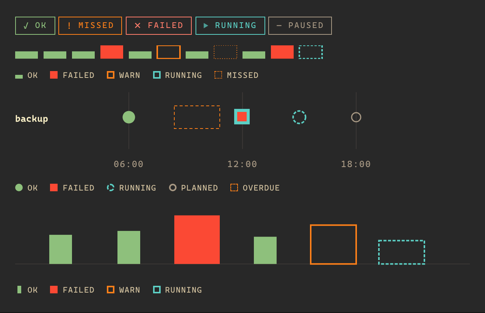
Run states in shape, sign and wordLaufzustände in Form, Zeichen und Wort -
1.79.0
A dialog's reject button can be named after what it does: "Keep going" instead of Cancel; Kirigami's toolbars cost less on a change of style.
Der Ablehnen-Knopf eines Dialogs lässt sich nach dem benennen, was er tut: „Weitermachen“ statt Abbrechen; Kirigamis Werkzeugleisten kosten beim Stilwechsel weniger.
NewNeu
KanteDialog.rejectText: names the reject button (Cancel, No, Close or Abort) likeacceptTextnames the accept button, e.g. "Keep going" under "Discard the round?", where Cancel could mean aborting the round or the question. Every style, also after a switch at run time and a language change; "" gives the standard text back.rejectButton()returns the button.
KanteDialog.rejectText: benennt den Ablehnen-Knopf (Cancel, No, Close oder Abort) wieacceptTextden Annehmen-Knopf, z. B. „Weitermachen“ unter „Runde verwerfen?“, wo „Abbrechen“ die Runde oder die Frage meinen könnte. Jeder Stil, auch nach einem Wechsel zur Laufzeit und nach einem Sprachwechsel; "" gibt den Standardtext zurück.rejectButton()gibt den Knopf zurück.
ImprovedVerbessert
- The scopes of Kirigami's toolbars (
KanteWindowScope, 1.78) no longer watch the items of an enabled bar: a change of style in Mitori takes about 100 ms less CPU. NewKanteScope.shallowfor such a scope.
- Die Scopes der Kirigami-Werkzeugleisten (
KanteWindowScope, 1.78) beobachten die Elemente einer aktiven Leiste nicht mehr: ein Stilwechsel in Mitori braucht rund 100 ms weniger CPU. NeuKanteScope.shallowfür einen solchen Scope.
All changesAlle Änderungen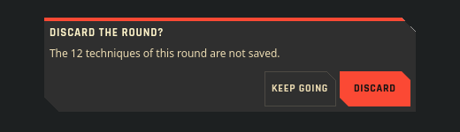
Reject button named Keep goingAblehnen-Knopf mit dem Namen Keep going -
1.78.0
A list row and a path node fit a window 533 px wide; Kirigami's toolbars take Kante's colours.
Eine Listenzeile und ein Pfad-Knoten passen in ein 533 px schmales Fenster; Kirigamis Werkzeugleisten nehmen Kantes Farben an.
NewNeu
KanteListRow: when the texts would get less thanminTextWidth(opt-in, default 0 = never), the meta figure and the trailing items move to a second line under the texts and title and subtitle wrap. Before, the buttons were pushed out of a narrow row. Wide rows look the same;stackedtells the state.KantePath: an entry may carrytext, a sentence under title and meta that wraps and is never cut.KanteWindowScope { window: root }: put into aKirigami.ApplicationWindowin place ofKanteScopeon itscontentItem.
KanteListRow: bekäme der Text weniger alsminTextWidth(opt-in, Standard 0 = nie), rücken Meta-Angabe und Trailing-Elemente in eine zweite Zeile unter den Text, und Titel und Untertitel umbrechen. Vorher wurden die Knöpfe aus einer schmalen Zeile geschoben. Breite Zeilen sehen gleich aus;stackednennt den Zustand.KantePath: ein Eintrag kanntexttragen, einen Satz unter Titel und Meta, der umbricht und nie abgeschnitten wird.KanteWindowScope { window: root }: in einKirigami.ApplicationWindowstattKanteScopeauf dessencontentItem.
FixedBehoben
- The global toolbars of a
Kirigami.ApplicationWindow(page bars, the page stack's bar, every bar style, pages onlayerstoo) showed the platform's colours with Kante on, e.g. Material's#fffbfeon Android.KanteWindowScopethemes them; with Kante off they get the platform's colours back.
- Die globalen Werkzeugleisten eines
Kirigami.ApplicationWindow(Seitenleisten, die Leiste des Seitenstapels, jeder Leistenstil, auch Seiten auflayers) zeigten mit Kante die Farben der Plattform, z. B. Materials#fffbfeunter Android.KanteWindowScopefärbt sie; ist Kante aus, bekommen sie die Farben der Plattform zurück.
All changesAlle Änderungen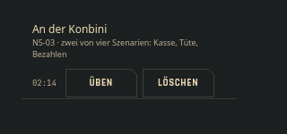
A row 240 units wide: the buttons move under the textsEine Zeile 240 Einheiten breit: die Knöpfe rücken unter den Text 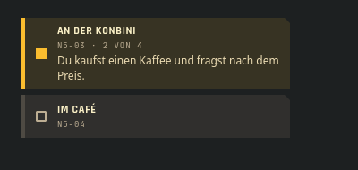
A path node with a sentenceEin Pfad-Knoten mit einem Satz 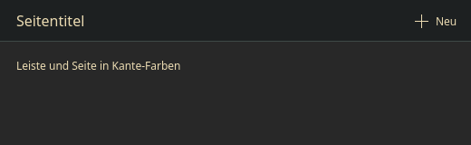
Kirigami's toolbar with KanteWindowScopeKirigamis Werkzeugleiste mit KanteWindowScope
Older releasesÄltere Versionen
-
1.77.0
A busy indicator that has stopped no longer keeps the window drawing.
Eine Ladeanzeige, die angehalten hat, lässt das Fenster nicht mehr weiterzeichnen.
NewNeu
KanteBusyIndicator: the platform's busy indicator, there only while it runs; stop it to hide it. With the Android style (Material) an indicator fades out when it stops, but a hidden one never finishes that fade, and the window then drew 90 frames a second for as long as it was open. In the Plasmai app on a phone that was half a processor core spent while nothing happened.
KanteBusyIndicator: die Ladeanzeige der Plattform, nur da, solange sie läuft; anhalten blendet sie aus. Im Android-Stil (Material) blendet eine Anzeige beim Anhalten aus, aber eine versteckte beendet dieses Ausblenden nie, und das Fenster zeichnete dann 90 Bilder in der Sekunde, solange es offen war. In der Plasmai-App auf dem Handy war das ein halber Prozessorkern, während nichts geschah.
All changesAlle ÄnderungenFixedBehoben
KantePullToRefreshuses it, so it no longer carries a stopped indicator before and after each refresh.
KantePullToRefreshnutzt sie und trägt vor und nach jedem Aktualisieren keine angehaltene Anzeige mehr mit sich.
-
1.76.3
Buttons, fields and pickers with icons are built up to ten times faster on Plasma.
Knöpfe, Felder und Auswahllisten mit Symbolen entstehen auf Plasma bis zu zehnmal schneller.
All changesAlle ÄnderungenImprovedVerbessert
KanteButtonandKantePlasmaButton: every button carried its three hopping squares hidden, though at most a few are busy at a time. They are now built whilebusyonly. In the Plasmai widget they were 2860 of the 20650 objects created at its start. It looks the same.KanteIcon: before its size was known, and on every new width or height, the icon had no name and no file. Qt then looks up an empty name in the icon theme, uncached, about 6.5 ms each on Plasma, and a layout changes the size several times. Buttons took 9 ms each to create instead of 1 ms as before 1.73, pages of the Plasmai app with date and time fields opened five to eight times slower. A transparent placeholder stands in until the icon is picked, and a new size picks once, after width and height. It looks the same.
KanteButtonundKantePlasmaButton: Jeder Knopf trug seine drei hüpfenden Quadrate versteckt mit sich, obwohl höchstens wenige gleichzeitig beschäftigt sind. Sie entstehen jetzt nur währendbusy. Im Plasmai-Widget waren das 2860 der 20650 Objekte beim Start. Es sieht gleich aus.KanteIcon: Bevor seine Größe feststand und bei jeder neuen Breite oder Höhe hatte das Symbol weder Namen noch Datei. Qt sucht dann einen leeren Namen im Symbolthema, ohne Cache, auf Plasma etwa 6,5 ms je Mal, und ein Layout ändert die Größe mehrmals. Ein Knopf brauchte 9 ms statt 1 ms wie vor 1.73, Seiten der Plasmai-App mit Datums- und Zeitfeldern öffneten fünf- bis achtmal langsamer. Ein durchsichtiger Platzhalter steht da, bis das Symbol gewählt ist, und eine neue Größe wählt einmal, nach Breite und Höhe. Es sieht gleich aus.
-
1.76.2
Apps with many items under a KanteScope no longer stand still when a view fills.
Apps mit vielen Elementen unter einem KanteScope stehen nicht mehr still, wenn sich eine Ansicht füllt.
All changesAlle ÄnderungenImprovedVerbessert
KanteScopelooked at an item once for every child it got. When a list or a staff made hundreds of items at once, it went through all of them hundreds of times. Kontra's notation view stood still for 2.7 s when it opened and for up to a second on the next line while playing. Now each item is looked at once: opening takes 17 ms and the next line 10 ms.
KanteScopesah sich ein Element für jedes Kind, das es bekam, einmal an. Legte eine Liste oder ein Notensystem Hunderte Elemente auf einmal an, ging es alle Hunderte Male durch. Kontras Notenansicht stand beim Öffnen 2,7 s still und beim Spielen in der nächsten Zeile bis zu einer Sekunde. Jetzt wird jedes Element einmal angesehen: Das Öffnen dauert 17 ms, die nächste Zeile 10 ms.
-
1.76.1
A long song map starts at bar 1 in right-to-left layouts, and a shorter song keeps a fitting range.
Eine lange Liedkarte beginnt auch bei Schrift von rechts nach links bei Takt 1, und ein kürzeres Lied behält einen passenden Bereich.
All changesAlle ÄnderungenFixedBehoben
KanteSongMap, right to left and too long for its width: the view started at the end of the piece, so the last bars showed. It now starts at bar 1, also when the number of bars changes; a new width keeps the view where it was, counted from bar 1.KanteSongMap: when the piece got shorter, the chosen range stayed, for example bars 6 to 8 of a piece with two bars, and a loop bound to it named bars that do not exist. The range now ends at the last bar, or is cleared when none of its bars is left.
KanteSongMap, von rechts nach links und zu lang für seine Breite: Die Ansicht begann am Ende des Stücks, man sah die letzten Takte. Sie beginnt jetzt bei Takt 1, auch wenn sich die Zahl der Takte ändert; eine neue Breite lässt die Ansicht, wo sie war, gezählt von Takt 1.KanteSongMap: Wurde das Stück kürzer, blieb der gewählte Bereich, etwa Takt 6 bis 8 bei einem Stück mit zwei Takten, und eine daran gebundene Schleife nannte Takte, die es nicht gibt. Der Bereich endet jetzt am letzten Takt oder wird geleert, wenn keiner seiner Takte bleibt.
-
1.76.0
A strip over a whole song shows where it goes well and where to practise.
Ein Streifen über ein ganzes Lied zeigt, wo es gut läuft und wo Übung fehlt.
NewNeu
KanteSongMap: one column per bar of a piece, its height the bar's value, for example the hit rate over the last runs, so weak bars stand out as low columns. The tooltip and screen readers say the number ("Takt 5: 82 %"); a bar not played yet is a dashed mark, not a zero. Dragging over bars, or Shift with the arrows and then Enter, chooses a range, for example the loop to practise; the range is tinted and underlined. A long piece scrolls sideways. Made for Kontra's song map.
KanteSongMap: eine Säule je Takt eines Stücks, ihre Höhe der Wert des Takts, etwa die Trefferquote der letzten Durchläufe, so fallen schwache Takte als niedrige Säulen auf. Tooltip und Screenreader nennen die Zahl („Takt 5: 82 %“); ein Takt, der noch nicht gespielt wurde, ist eine gestrichelte Marke, keine Null. Ziehen über Takte, oder Umschalt mit den Pfeilen und dann Enter, wählt einen Bereich, etwa die Schleife zum Üben; der Bereich ist getönt und unterstrichen. Ein langes Stück scrollt seitwärts. Gemacht für Kontras Liedkarte.
All changesAlle Änderungen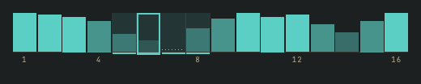
Sixteen bars, bars 5 to 8 chosen as the loop, one bar not played yetSechzehn Takte, Takte 5 bis 8 als Schleife gewählt, ein Takt noch nicht gespielt -
1.75.1
Calendars with many days open faster and follow a new width at once.
Kalender mit vielen Tagen öffnen schneller und folgen einer neuen Breite sofort.
All changesAlle ÄnderungenImprovedVerbessert
KanteCalendarHeatmap: each day was an item of its own with its name for screen readers, 1800 of them on Mitori's page of five years. The days are now drawn as one shape, and a screen reader hears a week at a time, every day of it with its date and tip. The page opened in 744 ms, now in about 525 ms with this alone; a new width moves no items any more, which made a calendar that fits its weeks to the width slow. It looks the same.
KanteCalendarHeatmap: Jeder Tag war ein eigenes Element mit eigenem Namen für Screenreader, 1800 davon auf Mitoris Seite mit fünf Jahren. Die Tage werden jetzt als eine Form gezeichnet, und ein Screenreader hört eine Woche auf einmal, jeden Tag darin mit Datum und Tooltip-Text. Die Seite öffnete in 744 ms, jetzt allein dadurch in etwa 525 ms; eine neue Breite verschiebt keine Elemente mehr, das machte einen Kalender langsam, der seine Wochen an die Breite anpasst. Er sieht gleich aus.
-
1.75.0
A document can show where the fields' values stand.
Ein Dokument kann zeigen, wo die Werte der Felder stehen.
NewNeu
.doc-reader,.doc-pages,.doc-page: the page a.doc-viewframe shows, a bar and the pages to scroll, for apps that draw a document themselves..doc-mark: a mark on a page in the theme's primary colour, so what a field holds can be found in the document at a glance.
.doc-reader,.doc-pages,.doc-page: die Seite, die ein.doc-view-Rahmen zeigt, eine Leiste und die Seiten zum Scrollen, für Apps, die ein Dokument selbst zeichnen..doc-mark: eine Markierung auf einer Seite in der Primärfarbe des Themes, damit sich der Wert eines Felds im Dokument auf einen Blick findet.
All changesAlle Änderungen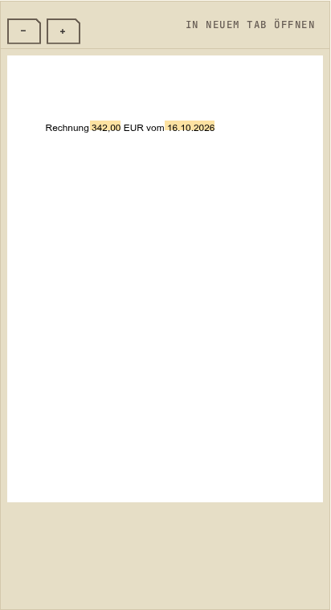
-
1.74.3
Tiles answer to Enter, and long hints stay readable.
Kacheln reagieren auf Enter, lange Hinweise bleiben lesbar.
All changesAlle ÄnderungenFixedBehoben
KanteOptionTile: Return and Enter did nothing, only Space chose a tile.KanteTilealso takes the keypad's Enter now.KanteOptionTile: title and hint were cut after one line. They now show in up to two lines.
KanteOptionTile: Return und Enter taten nichts, nur die Leertaste wählte eine Kachel.KanteTilenimmt jetzt auch Enter vom Ziffernblock.KanteOptionTile: Titel und Hinweis wurden nach einer Zeile abgeschnitten. Sie zeigen jetzt bis zu zwei Zeilen.
-
1.74.2
Calendars with many days open twice as fast.
Kalender mit vielen Tagen öffnen doppelt so schnell.
All changesAlle ÄnderungenImprovedVerbessert
KanteCalendarHeatmap: a year of days took about 95 ms to create, each day with its own handlers, tooltip and date calculations. The days now share one tooltip and one pair of handlers and read their dates from one list: about 47 ms. A page with several years opens noticeably sooner on a phone. It looks and behaves as before, and screen readers still hear each day.
KanteCalendarHeatmap: Ein Jahr Tage brauchte beim Erstellen etwa 95 ms, jeder Tag mit eigenen Handlern, eigenem Tooltip und eigenen Datumsrechnungen. Die Tage teilen sich jetzt einen Tooltip und ein Paar Handler und lesen ihr Datum aus einer Liste: etwa 47 ms. Eine Seite mit mehreren Jahren öffnet auf dem Telefon spürbar früher. Aussehen und Verhalten bleiben gleich, Screenreader hören weiter jeden Tag.
-
1.74.1
Symbols sharp again on Plasma, and buttons with a margin under the desktop style.
Symbole auf Plasma wieder scharf, und Knöpfe mit Rand unter dem Desktop-Stil.
FixedBehoben
- Icons drawn by
KanteIconcame out grey and soft in a layout on Plasma: 1.73.0 asked the theme for the file before the size was known and scaled the wrong one. It now picks after the size is set, and again at a new size. KanteButton: icon and label ran to the edge under the desktop style (Plasma, plasmoids), whose padding is 0. A button with a label now keeps at least 8 px on each side, a lone symbol stays in the middle even on a narrow button; styles with at least that much padding look as before, Fusion (4 px) gets a little wider.
- Symbole aus
KanteIconwurden in einem Layout auf Plasma grau und weich: 1.73.0 fragte das Thema nach der Datei, bevor die Größe feststand, und skalierte die falsche. Es wählt jetzt, nachdem die Größe gesetzt ist, und bei einer neuen Größe erneut. KanteButton: Symbol und Text liefen unter dem Desktop-Stil (Plasma, Plasmoids), dessen Polster 0 ist, bis an den Rand. Ein Knopf mit Text behält jetzt mindestens 8 px je Seite, ein einzelnes Symbol bleibt auch im schmalen Knopf mittig; Stile mit mindestens so viel Polster sehen aus wie vorher, Fusion (4 px) wird etwas breiter.
All changes in 1.74.1 →Alle Änderungen in 1.74.1 →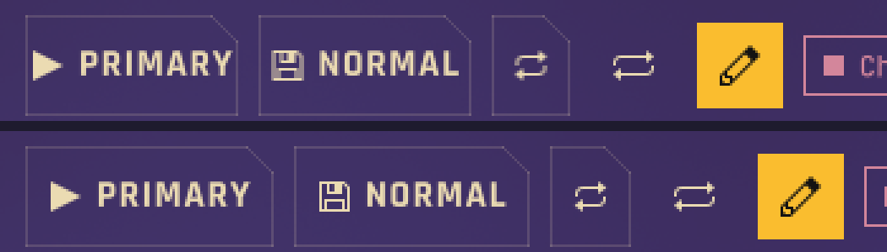
- Icons drawn by
-
1.74
A workbench that keeps the receipt in view, with each field's sources side by side.
Eine Werkbank, die den Beleg im Blick behält, mit den Quellen jedes Felds nebeneinander.
NewNeu
- The workbench's desk can hold a document beside its fields. The document stays in view while the fields scroll, so the fields can be checked against the paper at any time.
- A comparison table shows one row per field: what each source says, then the value it will hold. A click on a value takes it, and a source that differs from the others stands out.
- Der Arbeitsbereich der Werkbank kann ein Dokument neben seinen Feldern zeigen. Es bleibt stehen, während die Felder scrollen, sodass sich jedes Feld jederzeit am Papier prüfen lässt.
- Eine Vergleichstabelle zeigt je Feld eine Zeile: was jede Quelle sagt, dann den Wert, den das Feld bekommt. Ein Klick auf einen Wert übernimmt ihn, und eine abweichende Quelle fällt auf.
All changes in 1.74 →Alle Änderungen in 1.74 →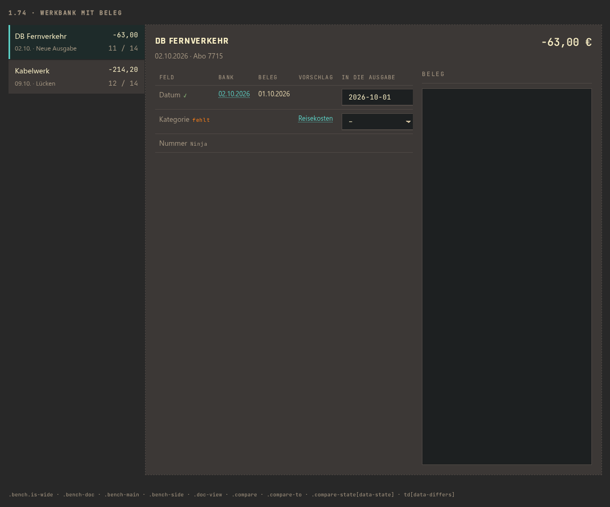
-
1.73
Everything sits where it should: buttons centred, icons in their colour on every platform, placeholders inside the field.
Alles sitzt, wo es soll: Knöpfe mittig, Symbole auf jeder Plattform in ihrer Farbe, Platzhalter im Feld.
NewNeu
KanteSliderSkin.trackColor: the colour of the track, for a slider on a dark stage where the sunken default does not show.
KanteSliderSkin.trackColor: die Farbe der Spur, für einen Schieber auf einer dunklen Bühne, auf der die vertiefte Vorgabe nicht zu sehen ist.
FixedBehoben
KanteButton: icon and label sat 2 px too low under the Material controls (Android, AppImage), because the content followed the style's uneven padding. They now stand in the middle.- Icons in buttons, chips, tabs, menus and tiles stayed dark on the dark ground on Android and in an AppImage:
Kirigami.Iconcolours a mask only with the Plasma theme. The newKanteIconcolours them on every platform. KanteTextField: Material floated the placeholder above a focused field, across the frame and cut off at the edge of a bar. It now stays inside the box, and a long one is shortened. This also holds forKanteDateField.
KanteButton: Symbol und Text saßen unter den Material-Controls (Android, AppImage) 2 px zu tief, weil der Inhalt dem ungleichen Polster des Stils folgte. Sie stehen jetzt in der Mitte.- Symbole in Knöpfen, Chips, Tabs, Menüs und Kacheln blieben auf Android und im AppImage dunkel auf dem dunklen Grund:
Kirigami.Iconfärbt eine Maske nur mit dem Plasma-Thema. Das neueKanteIconfärbt sie auf jeder Plattform. KanteTextField: Material ließ den Platzhalter im fokussierten Feld über den Rahmen schweben, am Rand einer Leiste abgeschnitten. Er bleibt jetzt im Feld, ein langer wird gekürzt. Das gilt auch fürKanteDateField.
All changes in 1.73 →Alle Änderungen in 1.73 →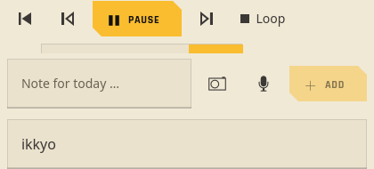
-
1.72
A suggestion under a field: the app offers values, the user picks one with a click.
Ein Vorschlag unter einem Feld: Die App bietet Werte an, der Nutzer nimmt einen mit einem Klick.
NewNeu
- A field can show a second line with suggestions, small below it (“Vorschlag: Hosting, Software”), as Paperless-ngx does. A click on a value puts it into the field, and the app hears it as if the user had chosen it. Nothing is filled in on its own: what a learned model guesses stays a suggestion until the user takes it. Built for Andon's VAT check.
- Ein Feld kann eine zweite Zeile mit Vorschlägen zeigen, klein darunter („Vorschlag: Hosting, Software“), wie Paperless-ngx. Ein Klick auf einen Wert setzt ihn ins Feld, und die App erfährt es, als hätte der Nutzer ihn gewählt. Nichts wird von selbst ausgefüllt: Was ein gelerntes Modell rät, bleibt ein Vorschlag, bis der Nutzer ihn nimmt. Gebaut für Andons USt-Prüfung.
All changes in 1.72 →Alle Änderungen in 1.72 →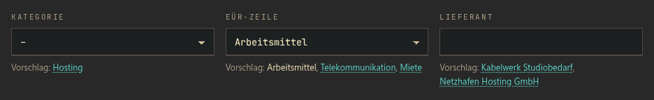
Suggestions under three fields; Arbeitsmittel is takenVorschläge unter drei Feldern; Arbeitsmittel ist übernommen -
1.71
A dialog with a wrapping text no longer reports a binding loop while it is built.
Ein Dialog mit umbrechendem Text meldet beim Aufbau keine Bindungsschleife mehr.
All changes in 1.71 →Alle Änderungen in 1.71 →FixedBehoben
KanteDialog(1.70 measured its content): the content height follows once the dialog is built. While Qt built it, Kante's header and colours arrived and a wrapping text changed its height inside the dialog's own height: Mitori's question before deleting a notebook reported a binding loop.
KanteDialog(1.70 misst seinen Inhalt): Die Inhaltshöhe folgt, sobald der Dialog aufgebaut ist. Während Qt ihn aufbaute, kamen Kantes Kopf und Farben an, und ein umbrechender Text änderte seine Höhe mitten in der Höhe des Dialogs: Mitoris Frage vor dem Löschen eines Notizbuchs meldete eine Bindungsschleife.
-
1.70
A dialog of its content's size measures its content.
Ein Dialog in der Größe seines Inhalts misst seinen Inhalt.
All changes in 1.70 →Alle Änderungen in 1.70 →FixedBehoben
KanteDialogwith size Fit: the dialog takes its content's width and height. Its colour scope is a second child of the content, and Qt measures a popup's content only from a single child: the dialog was 0 wide, and a text withoutcontentHeightran into the buttons. The dialog now takes the size from the app's item; the scope stays where it is (it themes disabled items, 1.51). Found in Mitori (its own Shinki dialog had the same pattern).
KanteDialogmit Größe Fit: Der Dialog nimmt Breite und Höhe seines Inhalts. Sein Farb-Scope ist ein zweites Kind im Inhalt, und Qt misst den Inhalt eines Popups nur bei einem einzigen Kind: Der Dialog war 0 breit, und ein Text ohnecontentHeightlief in die Knöpfe. Jetzt nimmt der Dialog die Größe vom Element der App; der Scope bleibt, wo er ist (er färbt deaktivierte Elemente, 1.51). Gefunden in Mitori (dessen Shinki-Dialog hatte dasselbe Muster).
-
1.69
A chip that is one choice of a set keeps the app's choice.
Ein Chip, der eine Wahl aus einer Reihe ist, behält die Wahl der App.
All changes in 1.69 →Alle Änderungen in 1.69 →FixedBehoben
KanteChipwithchoice: a tap only reports (clicked),checkedstays the app's binding. Before, a tap toggled the chip itself and broke the binding: an old choice stayed marked, and a second tap on the chosen chip cleared it. Found in Mitori (grade chips).
KanteChipmitchoice: Ein Tipp meldet nur (clicked),checkedbleibt die Bindung der App. Bisher schaltete ein Tipp den Chip selbst um und brach die Bindung: Eine alte Wahl blieb markiert, und ein zweiter Tipp auf den gewählten Chip hob sie auf. Gefunden in Mitori (Grad-Chips).
-
1.68
A heading that may wrap shows its whole text in Kante too.
Eine Überschrift, die umbrechen darf, zeigt auch in Kante ihren ganzen Text.
All changes in 1.68 →Alle Änderungen in 1.68 →FixedBehoben
KanteHeadingwithwrapModebreaks a long title into lines in Kante and Kante Light; before, Kante drew it on one line and cut it off with “…”. Found in Mitori (long comment titles).
KanteHeadingmitwrapModebricht einen langen Titel in Kante und Kante Light in Zeilen um; bisher zeichnete Kante ihn einzeilig und schnitt ihn mit „…“ ab. Gefunden in Mitori (lange Titel der Kommentare).
-
1.67
An app can offer Leinen as a choice of its own: Kante's light palette no longer depends on a light platform theme.
Eine App kann Leinen als eigene Wahl anbieten: Kantes helle Palette hängt nicht mehr am hellen Plattform-Thema.
All changes in 1.67 →Alle Änderungen in 1.67 →NewNeu
KanteStyle.preferLightforces Leinen whatever the platform theme says, aspreferDarkforces dark (preferDarkwins when both are set). For Mitori's style setting, which offers Kante and Leinen side by side.
KanteStyle.preferLighterzwingt Leinen, gleich was das Plattform-Thema sagt, so wiepreferDarkdunkel erzwingt (preferDarkgewinnt, wenn beide gesetzt sind). Für Mitoris Stilwahl, die Kante und Leinen nebeneinander anbietet.
-
1.66
A window with a Kante dialog or page scope that the garbage collector takes leaves no errors in the log.
Ein Fenster mit einem Kante-Dialog oder Seiten-Scope, das der Garbage Collector nimmt, hinterlässt keine Fehler im Log.
All changes in 1.66 →Alle Änderungen in 1.66 →FixedBehoben
- When the garbage collector took a window, a pending step of
KanteScopeorKanteDialogran on it and wrote aTypeErrorto the log, up to 14 times in a test. Found in Mitori.
- Nahm der Garbage Collector ein Fenster, lief ein ausstehender Schritt von
KanteScopeoderKanteDialogdarauf und schrieb einenTypeErrorins Log, im Test bis zu 14-mal. Gefunden in Mitori.
- When the garbage collector took a window, a pending step of
-
1.65
A window that holds a Kante dialog goes down without a crash.
Ein Fenster mit einem Kante-Dialog darin geht ohne Absturz zu.
All changes in 1.65 →Alle Änderungen in 1.65 →FixedBehoben
- An app crashed when a window with a
KanteDialog, or a dialog withKanteDialogSkin, in it went down and the garbage collector took it: the dialog gave its old background back while Qt was already deleting it. lmix had to take its page windows down by hand for it.
- Eine App stürzte ab, wenn ein Fenster mit einem
KanteDialogoder einem Dialog mitKanteDialogSkindarin abgebaut wurde und der Garbage Collector es nahm: Der Dialog gab seinen alten Hintergrund zurück, während Qt ihn schon löschte. lmix musste seine Seitenfenster dafür von Hand abbauen.
- An app crashed when a window with a
-
1.64
The heat grid keeps the focus where it was and fills a width; bar charts can start their scale above zero.
Das Wärmeraster behält den Fokus, wo er war, und füllt eine Breite; Balkendiagramme können ihre Skala über null beginnen.
NewNeu
- Heat grids can fill their width: a fixed number of columns shares the room, with square cells as large as it allows. Built for Mitori's forms, eight a row on a phone and eleven on a tablet.
- Bar charts can start their scale above zero, so an average from 1 to 4 has an axis from 1 to 4. A bar on the lowest value can keep a small height, so it still shows; the read-out says its real value. Built for Mitori's exam mode.
- The row names of a heat grid can take another font, so long technique names stay readable on a phone.
- Wärmeraster können ihre Breite füllen: Eine feste Zahl von Spalten teilt sich den Platz, mit quadratischen Zellen, so groß er es erlaubt. Gebaut für Mitoris Formen, acht je Reihe auf dem Handy und elf auf dem Tablet.
- Balkendiagramme können ihre Skala über null beginnen, so hat ein Schnitt von 1 bis 4 eine Achse von 1 bis 4. Ein Balken auf dem kleinsten Wert kann eine kleine Höhe behalten und bleibt so sichtbar; die Ablesung nennt seinen echten Wert. Gebaut für Mitoris Prüfungsmodus.
- Die Zeilennamen eines Wärmerasters können eine andere Schrift nehmen, so bleiben lange Technik-Namen auf dem Handy lesbar.
ImprovedVerbessert
- Level 0 of a heat grid and its legend key have the same, clearer frame, so level 0 stands apart from the page and from a blank place.
- Stufe 0 eines Wärmerasters und ihr Legenden-Schlüssel haben denselben, deutlicheren Rahmen, so hebt sich Stufe 0 von der Seite und von einem leeren Platz ab.
FixedBehoben
- When the focused cell of a heat grid turned into a blank place, the focus jumped to the first cell and the view to the start; now it moves to the nearest cell.
- When all cells turned blank while one had the focus, Tab went backwards and the app logged a warning; now Tab goes on.
- A cell the app chose in two steps (first the row, then the column) was moved to the first cell in between when the grid did not have the focus; now it stays.
- Wurde die Zelle mit dem Fokus zu einem leeren Platz, sprang der Fokus auf die erste Zelle und die Ansicht an den Anfang; jetzt geht er zur nächstgelegenen Zelle.
- Wurden alle Zellen leer, während eine den Fokus hatte, ging Tab rückwärts und die App schrieb eine Warnung; jetzt geht Tab weiter.
- Eine Zelle, die die App in zwei Schritten wählte (erst die Zeile, dann die Spalte), wurde dazwischen auf die erste Zelle gesetzt, wenn das Raster keinen Fokus hatte; jetzt bleibt sie.
All changes in 1.64 →Alle Änderungen in 1.64 →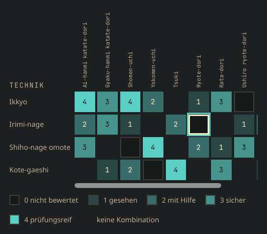
Techniques by attack: readable names, level 0 in the legendTechniken je Angriff: lesbare Namen, Stufe 0 in der Legende 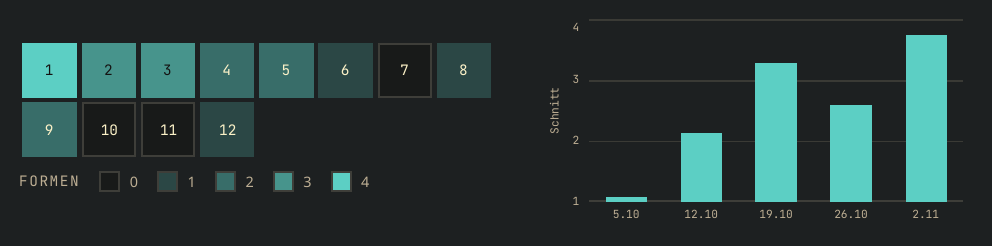
Forms filling the width; the average per round from 1 to 4Formen, die die Breite füllen; der Schnitt je Runde von 1 bis 4 -
1.63
A heat grid with labels: rows, columns, a number in every cell and a legend, also for wide grids on a phone.
Ein Wärmeraster mit Beschriftung: Zeilen, Spalten, eine Zahl in jeder Zelle und eine Legende, auch für breite Raster auf dem Handy.
NewNeu
KanteHeatGrid: rows × columns on the heat scale, with row and column labels, the value as a number in each cell, a legend with the value of each level, a tooltip per cell and keyboard focus (arrows, Enter). Screen readers hear each cell by name. Built for Kontra's fretboard quiz (hits per string and fret);KanteHeatmapstays the unlabelled grid of days.- Wide grids fit a phone: the cells scroll sideways while the row names stay, with a scroll bar, and the focused cell stays in sight. Column names can stand upright, so long names allow narrow columns; long row names are cut to a width with the full name as a tooltip. Built for Mitori's technique map (techniques × attacks).
- Levels 0 to 4 as steps, with a word per level in the legend, and blank places where there is nothing to show; level 0 keeps a fine frame, so it stays apart from a blank place. The focus ring stands out on every level, also on the strongest, which is filled with the focus colour.
KanteHeatGrid: Zeilen × Spalten auf der Wärmeskala, mit Zeilen- und Spaltenbeschriftung, dem Wert als Zahl in jeder Zelle, einer Legende mit dem Wert jeder Stufe, einem Tooltip je Zelle und Tastaturfokus (Pfeile, Enter). Screenreader lesen jede Zelle mit Namen vor. Gebaut für Kontras Griffbrett-Quiz (Treffer je Saite und Bund);KanteHeatmapbleibt das unbeschriftete Raster der Tage.- Breite Raster passen aufs Handy: Die Zellen scrollen waagerecht, die Zeilennamen bleiben stehen, eine Scrollleiste zeigt die Stelle, und die Zelle mit dem Fokus bleibt im Blick. Spaltennamen können hochkant stehen, so erlauben lange Namen schmale Spalten; lange Zeilennamen werden auf eine Breite gekürzt, der ganze Name steht im Tooltip. Gebaut für Mitoris Technik-Landkarte (Techniken × Angriffe).
- Stufen 0 bis 4 als Schritte, mit einem Wort je Stufe in der Legende, und leere Plätze, wo es nichts zu zeigen gibt; Stufe 0 behält einen feinen Rahmen und bleibt so von einem leeren Platz zu unterscheiden. Der Fokusrahmen ist auf jeder Stufe zu sehen, auch auf der stärksten, die in der Fokusfarbe gefüllt ist.
All changes in 1.63 →Alle Änderungen in 1.63 →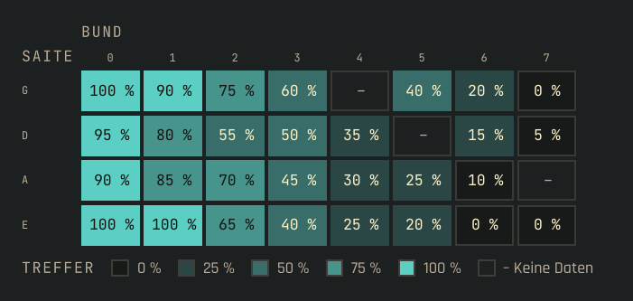
Hits per string and fret, a number in every cell, the legend belowTreffer je Saite und Bund, eine Zahl in jeder Zelle, darunter die Legende 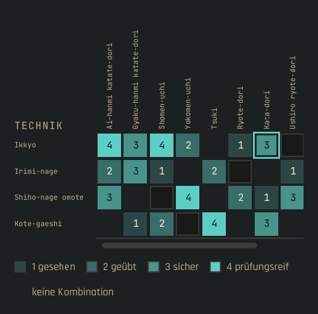
Techniques by attack on a phone: upright names, blank places, a scroll barTechniken je Angriff auf dem Handy: hochkante Namen, leere Plätze, eine Scrollleiste -
1.62.1
The practice calendar sits right also in a wide layout, and a single week names its own month.
Der Übungskalender steht auch in einem breiten Layout richtig, und eine einzelne Woche nennt ihren eigenen Monat.
All changes in 1.62.1 →Alle Änderungen in 1.62.1 →FixedBehoben
- Right to left,
KanteCalendarHeatmapstayed at the left edge when a layout gave it more width than it needs. - A calendar of one week ending on 30 November was labelled December.
- Von rechts nach links blieb
KanteCalendarHeatmapam linken Rand, wenn ein Layout ihr mehr Breite gab, als sie braucht. - Ein Kalender von einer Woche, die am 30. November endet, war mit Dezember beschriftet.
- Right to left,
-
1.62
Practice days on a calendar, with weekdays, months and a tooltip per day.
Übungstage auf einem Kalender, mit Wochentagen, Monaten und einem Tooltip je Tag.
NewNeu
KanteCalendarHeatmapshows days on a calendar grid: a column per week, weekday names at the side, the month's name above the week it begins in. Each day is coloured by its level like the heatmap; hovering or tapping it shows the date and a text, screen readers hear the date in full. Right to left, the newest week is on the left.
KanteCalendarHeatmapzeigt Tage auf einem Kalenderraster: eine Spalte je Woche, Wochentage an der Seite, der Monatsname über der Woche, in der er beginnt. Jeder Tag hat die Farbe seiner Stufe wie in der Heatmap; beim Darüberfahren oder Antippen zeigt er Datum und Text, Bildschirmleser hören das volle Datum. Von rechts nach links steht die neueste Woche links.
All changes in 1.62 →Alle Änderungen in 1.62 →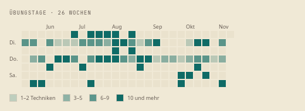
Practice days on a calendarÜbungstage auf einem Kalender -
1.61.1
A tap in a sheet stays in the sheet.
Ein Tipp in einem Blatt bleibt im Blatt.
All changes in 1.61.1 →Alle Änderungen in 1.61.1 →FixedBehoben
- A
KanteListRowunder a modal sheet or dialog took taps meant for it, when the tap landed on aTapHandlersuch as the buttons ofKanteLevelPicker. In Mitori a rating in the technique sheet also opened the row underneath.
- Eine
KanteListRowunter einem modalen Blatt oder Dialog nahm Tipps an, die ihm galten, wenn der Tipp auf einemTapHandlerlandete, etwa den Knöpfen vonKanteLevelPicker. In Mitori öffnete eine Einschätzung im Technik-Blatt zugleich die Zeile darunter.
- A
-
1.61
Shares by level get colours from one scale and a legend that explains them.
Anteile je Stufe bekommen Farben aus einer Skala und eine Legende, die sie erklärt.
NewNeu
KanteLegendexplains a chart: a key and a word per item, wrapping when narrow.KanteStyle.levelColorgives the colour of a level on a scale, the same as the heatmap's, for shares by level.- Parts of a stacked
KanteProgressBarshow theirtextas a tooltip and name it for screen readers.
KanteLegenderklärt ein Diagramm: ein Farbfeld und ein Wort je Eintrag, bei wenig Platz umbrochen.KanteStyle.levelColorliefert die Farbe einer Stufe auf einer Skala, dieselbe wie in der Heatmap, für Anteile je Stufe.- Teile einer gestapelten
KanteProgressBarzeigen ihrentextals Tooltip und nennen ihn Bildschirmlesern.
All changes in 1.61 →Alle Änderungen in 1.61 →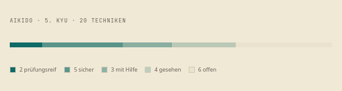
Shares by level and their legendAnteile je Stufe und ihre Legende -
1.60
Kante can show and pick a level of four, for ratings such as how well a technique sits.
Kante kann eine Stufe von vier zeigen und wählen lassen, für Einschätzungen wie die, wie sicher eine Technik sitzt.
NewNeu
KanteLevelDotsshows a level as dots, such as how well a technique sits (3 of 4), small enough for a list row.KanteLevelPickerpicks a level 1 to 4 with large buttons, number and word; a tap on the chosen level counts again. Mitori rates its techniques with it.
KanteLevelDotszeigt eine Stufe als Punkte, etwa wie sicher eine Technik sitzt (3 von 4), klein genug für eine Listenzeile.KanteLevelPickerwählt eine Stufe von 1 bis 4 mit großen Knöpfen, Zahl und Wort; ein Tipp auf die gewählte Stufe zählt erneut. Mitori schätzt damit seine Techniken ein.
All changes in 1.60 →Alle Änderungen in 1.60 →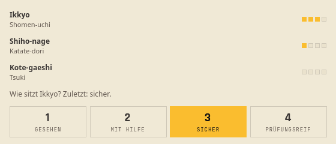
Dots per technique, and the picker for a new ratingPunkte je Technik und die Auswahl für eine neue Einschätzung -
1.59
Kante gets the pieces for a video player and a start menu of tiles.
Kante bekommt die Bausteine für einen Videoplayer und ein Startmenü aus Kacheln.
NewNeu
KanteTransportBarfor video: fixed tempi as segments (25, 50, 75, 100 %), buttons for single frames back and on (keys , and .), and the metronome and count-in can be hidden. Mitori's player uses it for the exam videos.KanteOptionTileas a launch tile: withcheckable: falseit opens something and is never chosen;glyphshows a character such as a kanji in place of the icon.
KanteTransportBarfür Video: feste Tempi als Segmente (25, 50, 75, 100 %), Knöpfe für einzelne Bilder zurück und vor (Tasten , und .), Metronom und Einzählen lassen sich ausblenden. Der Player von Mitori nutzt sie für die Prüfungsvideos.KanteOptionTileals Startkachel: mitcheckable: falseöffnet sie etwas und wird nie gewählt;glyphzeigt statt des Symbols ein Zeichen, etwa ein Kanji.
ImprovedVerbessert
- Right to left, the transport bar keeps its order: it runs along time like a timeline, and its marks point the right way.
- Von rechts nach links behält die Transportleiste ihre Reihenfolge: Sie folgt der Zeit wie eine Zeitleiste, und ihre Marken zeigen in die richtige Richtung.
All changes in 1.59 →Alle Änderungen in 1.59 →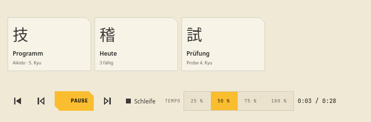
Launch tiles with kanji, a transport bar with single frames and four tempiStartkacheln mit Kanji, eine Transportleiste mit Einzelbildern und vier Tempi -
1.58
A dialog can have buttons of its own at the start of its footer.
Ein Dialog kann eigene Knöpfe am Anfang seines Fußes haben.
NewNeu
KanteDialoggetsfooterStart: the app's own buttons at the start of the footer, before Close or Ok and apart from them, in every style; right to left they stand at the right. lmix puts "Shortcuts…" there in its keys overview; before, it had to rename the Help button.
KanteDialogbekommtfooterStart: die eigenen Knöpfe der App am Anfang des Fußes, vor Schließen oder Ok und abgesetzt davon, in jedem Stil; von rechts nach links stehen sie rechts. lmix setzt dort „Belegungen…“ in seine Tastenübersicht; vorher musste es den Hilfe-Knopf umbenennen.
All changes in 1.58 →Alle Änderungen in 1.58 →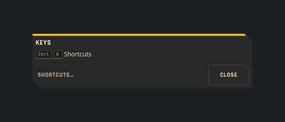
An own button at the start of the footer, Close at its endEin eigener Knopf am Anfang des Fußes, Schließen am Ende -
1.57
A menu row gets room at its end.
Eine Menüzeile bekommt Platz an ihrem Ende.
NewNeu
KanteMenuItemgetstrailing: items after the value, such as ◀ ▶ of a direction or the lengths as segments; they take their own clicks.
KanteMenuItembekommttrailing: Inhalt hinter dem Wert, etwa ◀ ▶ einer Richtung oder die Dauern als Segmente; er nimmt seine Klicks selbst an.
All changes in 1.57 →Alle Änderungen in 1.57 →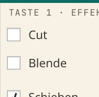
An effect menu: the direction as ◀ ▶ and the lengths as segments at the row's endEin Effektmenü: die Richtung als ◀ ▶ und die Dauern als Segmente am Zeilenende -
1.56
Line weights, markers, tint levels and the sizes of an hour grid are Kante roles now, so an app that draws a timeline or a board by hand needs no sizes of its own.
Linienstärken, Marker, Tönungsstufen und die Maße eines Stundenrasters sind jetzt Rollen von Kante, damit eine App, die eine Zeitleiste oder ein Brett selbst zeichnet, keine eigenen Größen braucht.
NewNeu
KanteStylegets line weights for borders (1), marking lines (2) and the colour edge of an entry (3), in every style.- Markers, meters and swatches have a size: day dots and legend keys square in the Kante style, a thin meter for a day's load, a colour key for a legend.
- Four tint levels (wash, fill, strong fill, edge) for a colour that is data, such as a project's, and opacities for something done or out of range.
- An hour grid and a month cell get their sizes: the height of a minute and of an entry line.
- The web gets the same weights and levels as tokens (
--line-*,--level-*).
KanteStylebekommt Linienstärken für Ränder (1), markierende Linien (2) und die Farbkante eines Eintrags (3), in jedem Stil.- Marker, Messbalken und Farbfelder haben eine Größe: Tagespunkte und Legendenzeichen im Stil Kante eckig, ein schmaler Balken für die Auslastung eines Tages, ein Farbfeld für eine Legende.
- Vier Tönungsstufen (Hauch, Fläche, starke Fläche, Rand) für eine Farbe, die Daten zeigt, etwa die eines Projekts, und Deckkräfte für Erledigtes und für das, was außerhalb liegt.
- Stundenraster und Monatszelle bekommen ihre Maße: die Höhe einer Minute und einer Eintragszeile.
- Das Web bekommt dieselben Stärken und Stufen als Tokens (
--line-*,--level-*).
FixedBehoben
- A combo box in the Kante style no longer cuts its value short when the platform style sizes it („Erledigu…“ in Kurrent's heatmap): it is as wide as its widest entry, at least
KanteStyle.comboMinimumWidth, and follows the font.
- Ein Auswahlfeld im Stil Kante schneidet seinen Wert nicht mehr ab, wenn der Plattformstil seine Breite bestimmt („Erledigu…“ in Kurrents Heatmap): Es ist so breit wie sein längster Eintrag, mindestens
KanteStyle.comboMinimumWidth, und folgt der Schrift.
All changes in 1.56 →Alle Änderungen in 1.56 →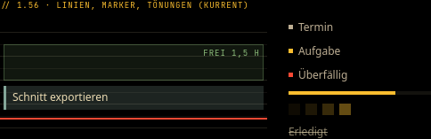
An hour grid drawn from the roles onlyEin Stundenraster nur aus den Rollen -
1.55
Dialogs come in three widths, and a destructive question is red.
Dialoge gibt es in drei Breiten, und eine destruktive Frage ist rot.
NewNeu
KanteDialoggetssize: Small, Medium and Large, at most 90 % of the window.KanteDialoggetsdestructive: the bar and the accept button (Ok, or Yes of a yes/no question) in the negative colour, Cancel before it.KanteButtongetsdestructive: a Normal or Quiet button with red text in the Kante style, for a removal that should not outweigh the actions beside it.
KanteDialogbekommtsize: Small, Medium und Large, höchstens 90 % des Fensters.KanteDialogbekommtdestructive: Balken und Bestätigungsknopf (Ok, oder Ja einer Ja/Nein-Frage) in der Warnfarbe, Abbrechen davor.KanteButtonbekommtdestructive: ein Normal- oder Quiet-Knopf mit roter Schrift im Stil Kante, für ein Entfernen, das die Aktionen daneben nicht überragen soll.
FixedBehoben
KanteDialog'sacceptTextholds in every language: in German the button read „OK“, because the button box sets its standard texts again once the translations are in.
acceptTextvonKanteDialoghält in jeder Sprache: Auf Deutsch hieß der Knopf „OK“, weil die Knopfleiste ihre Standardtexte neu setzt, sobald die Übersetzungen geladen sind.
All changes in 1.55 →Alle Änderungen in 1.55 →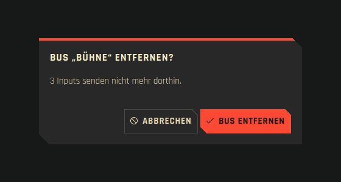
A destructive question: red bar, the button names what goes, Cancel firstEine destruktive Frage: roter Balken, der Knopf nennt, was geht, Abbrechen zuerst -
1.54
The page bar can be lower, down to a coloured strip, and the month grid marks its days.
Die Seitenleiste kann niedriger sein, bis hin zu einem Farbband, und das Monatsraster markiert seine Tage.
NewNeu
KantePageBargetsdensity: Compact (lower, smaller labels; it grows for a small button at its end) and Band (one segment per page, the others half as high; the name as tooltip). lmix's operators want the room for their inputs.KanteCalendarGridmarks days with up to three dots (dots) and tints a range of days (rangeFrom,rangeTo), as Kurrent's Agenda needs for appointments, tasks and the days a view shows.
KantePageBarbekommtdensity: Compact (niedriger, kleinere Schrift; wächst für einen kleinen Knopf am Ende) und Band (ein Abschnitt je Seite, die übrigen halb so hoch; der Name als Tooltip). Wer lmix bedient, braucht den Platz für die Inputs.KanteCalendarGridmarkiert Tage mit bis zu drei Punkten (dots) und tönt einen Zeitraum (rangeFrom,rangeTo), wie ihn Kurrents Agenda für Termine, Aufgaben und die gezeigten Tage braucht.
All changes in 1.54 →Alle Änderungen in 1.54 →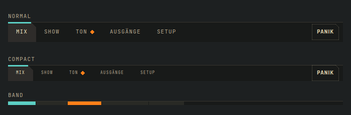
The page bar in Normal, Compact and BandDie Seitenleiste in Normal, Compact und Band 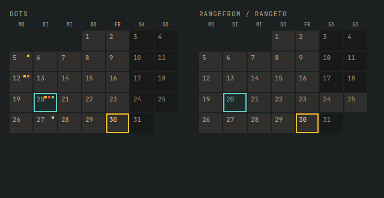
Day dots and a range in the month gridTagespunkte und ein Zeitraum im Monatsraster -
1.53
Every row of a list takes a click again.
Jede Zeile einer Liste nimmt wieder einen Klick an.
All changes in 1.53 →Alle Änderungen in 1.53 →FixedBehoben
KanteListRowin a scrolling list reacted only on its first row; a click on any other row did nothing (Qt 6.11).KanteScopeno longer logs a script error when a page or dialog closes right after its content changed.
KanteListRowin einer scrollbaren Liste reagierte nur in der ersten Zeile; ein Klick auf jede andere Zeile blieb ohne Wirkung (Qt 6.11).KanteScopemeldet keinen Skriptfehler mehr, wenn eine Seite oder ein Dialog gleich nach einer Änderung ihres Inhalts schließt.
-
1.52
The workbench desk stays in view beside a long list.
Die Arbeitsfläche der Werkbank bleibt neben einer langen Liste im Blick.
All changes in 1.52 →Alle Änderungen in 1.52 →FixedBehoben
.bench-deskmoves along while the list scrolls. Before, a click on an entry far down showed its desk at the top of the page, out of view. A desk taller than the window scrolls itself; on a phone nothing changes.
.bench-deskwandert mit, während die Liste scrollt. Vorher stand die Arbeitsfläche nach einem Klick auf einen Eintrag weit unten oben auf der Seite, außer Sicht. Ist sie höher als das Fenster, scrollt sie selbst; am Telefon ändert sich nichts.
-
1.51
Kontra's QA of 28 October: a sidebar that stays dark in Kante on a light system, sheets that keep the keyboard, string colours that read at the beamer and tell apart with deuteranopia, and histogram bars a screen reader can read. For players at 200 % with a keyboard and a screen reader, for the teacher at the beamer and for beginners on a light desktop.
Kontras QA vom 28. Oktober: eine Seitenleiste, die in Kante auf hellem System dunkel bleibt, Blätter, die die Tastatur behalten, Saitenfarben, die am Beamer lesbar und mit Deuteranopie unterscheidbar sind, und Histogramm-Balken, die ein Screenreader vorliest. Für alle, die bei 200 % mit Tastatur und Screenreader spielen, für die Lehrkraft am Beamer und für Einsteiger auf einem hellen Desktop.
NewNeu
KanteFocusTrap: while a sheet in the page is open, Tab and Shift+Tab stay inside it and the page behind takes no focus (or is hidden from screen readers too); closed, the focus goes back to the control the app names. Kontra's run summary let Tab run on into the sidebar.KanteScope.popup: a drawer's ground takes the Kante colours with its entries. A Kirigami sidebar was white below its entries, "close sidebar" at 1.4:1.
KanteFocusTrap: Solange ein Blatt in der Seite offen ist, bleiben Tab und Umschalt+Tab darin, und die Seite dahinter nimmt keinen Fokus (oder ist auch für Screenreader ausgeblendet); geschlossen, geht der Fokus zu dem Bedienelement, das die App nennt. In Kontras Auswertung lief Tab weiter in die Seitenleiste.KanteScope.popup: Der Grund einer Seitenleiste nimmt mit ihren Einträgen die Kante-Farben. Eine Kirigami-Seitenleiste war unter den Einträgen weiß, „Seitenleiste schließen“ stand bei 1,4:1.
ImprovedVerbessert
- String colours on a light ground (Leinen and Kante Light): raspberry, blue, ochre and strong text for the four bass strings, at least 4.5:1 and apart from each other with deuteranopia. The A string was 1.7:1 at the beamer, purple and cyan looked alike with deuteranopia. The tab draws its string lines in full colour there. Dark Kante keeps its colours; Kante Light on a dark system now takes the dark palette's string colours instead of the platform's.
- Screen readers hear every bar of the timing histogram with its range and count: "−20 bis −10 ms: 3 Noten" (
binText, translatable). Before they heard only "early" and "late".
- Saitenfarben auf hellem Grund (Leinen und Kante Light): Himbeere, Blau, Ocker und starke Schrift für die vier Basssaiten, mindestens 4,5:1 und auch mit Deuteranopie voneinander unterscheidbar. Die A-Saite stand am Beamer bei 1,7:1, Lila und Cyan sahen mit Deuteranopie gleich aus. Die Tabulatur zeichnet ihre Saitenlinien dort in voller Farbe. Dunkles Kante behält seine Farben; Kante Light auf dunklem System nimmt jetzt die Saitenfarben der dunklen Palette statt der Plattform.
- Screenreader nennen jeden Balken des Timing-Histogramms mit Bereich und Anzahl: „−20 bis −10 ms: 3 Noten“ (
binText, übersetzbar). Vorher hörten sie nur „früh“ und „spät“.
FixedBehoben
KanteScopereaches disabled items: Kirigami gave them the platform's colours, so in Kante on a light system a disabled sidebar entry stood at 1.7:1 and separators white. Kante Light and System keep the platform's look, and an item with colours of its own keeps them.KanteCalloutwith a title only draws no empty line under it (it was about 40 px too tall).KanteListRowwith a "?" at its end: Tab reaches the row and then the "?", Shift+Tab from the "?" goes to its row. Once the "?" had the focus, the row was skipped both ways.
KanteScopeerreicht gesperrte Elemente: Kirigami gab ihnen die Farben der Plattform, so stand in Kante auf hellem System ein gesperrter Eintrag der Seitenleiste bei 1,7:1 und Trennlinien weiß. Kante Light und System behalten das Aussehen der Plattform, und ein Element mit eigenen Farben behält sie.KanteCalloutmit nur einem Titel zeichnet keine leere Zeile darunter (er war etwa 40 px zu hoch).KanteListRowmit einem „?“ am Ende: Tab erreicht die Zeile und dann das „?“, Umschalt+Tab vom „?“ geht zu seiner Zeile. Hatte das „?“ einmal den Fokus, wurde die Zeile in beide Richtungen übersprungen.
NoteHinweis
- Apps that theme a drawer pass it as
popup:KanteScope { target: drawer.contentItem; popup: drawer }. Leinen's string colours change for every app that shows strings.
- Apps, die eine Seitenleiste einfärben, geben sie als
popupmit:KanteScope { target: drawer.contentItem; popup: drawer }. Die Saitenfarben in Leinen ändern sich für jede App, die Saiten zeigt.
All changes in 1.51 →Alle Änderungen in 1.51 →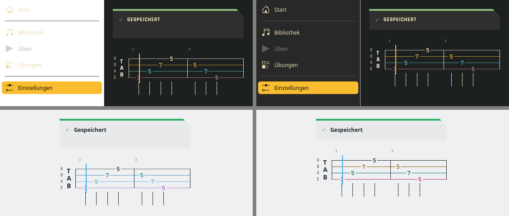
Before (left) and after (right): sidebar in Kante on a light system, callout with a title only, string colours in Kante LightVorher (links) und nachher (rechts): Seitenleiste in Kante auf hellem System, Hinweis nur mit Titel, Saitenfarben in Kante Light -
1.50
Rehearsal marks: tab, notation and the lanes show where Intro, verse, chorus or part B begin, in a framed box over the first bar of each part. For players who find their way in a song by its parts, and for a teacher at the beamer saying "from the chorus".
Probenzeichen: Tabulatur, Noten und die Lanes zeigen, wo Intro, Strophe, Refrain oder Teil B beginnen, in einem gerahmten Kasten über dem ersten Takt jedes Teils. Für alle, die sich in einem Stück an seinen Teilen orientieren, und für die Lehrkraft am Beamer, die „ab dem Refrain“ sagt.
NewNeu
KanteRehearsalMark: the name of a part in a framed box, with the small cut in Kante and Kante Light, square in System. A long name is cut short with "…" instead of running into the next mark; screen readers hear all of it ("Teil Refrain · B").- A bar's
sectioninKanteTabStaff,KanteBassStaff,KanteTabLaneandKanteKeyLaneputs the mark over that bar. Several names of one bar are joined: "Refrain · B" (KanteStyle.rehearsalText). - Screen readers hear the part being played along with the bar.
KanteRehearsalMark: der Name eines Teils in einem gerahmten Kasten, mit der kleinen Schnittecke in Kante und Kante Light, eckig in System. Ein langer Name wird mit „…“ gekürzt, statt in das nächste Zeichen zu laufen; Screenreader hören ihn ganz („Teil Refrain · B“).- Das Feld
sectioneines Takts inKanteTabStaff,KanteBassStaff,KanteTabLaneundKanteKeyLanesetzt das Zeichen über diesen Takt. Mehrere Namen eines Takts werden zusammengefasst: „Refrain · B“ (KanteStyle.rehearsalText). - Screenreader nennen mit dem Takt den Teil, der gerade läuft.
NoteHinweis
- Only songs with sections change: tab, notation and the tab lane move down by the row of the marks (in the key lane the mark sits right of the bar number, nothing moves). Without
sectionthe layout stays as it was.
- Nur Stücke mit Teilen ändern sich: Tabulatur, Noten und die Tab-Lane rücken um die Zeile der Zeichen nach unten (in der Tasten-Lane steht das Zeichen rechts neben der Taktnummer, dort rückt nichts). Ohne
sectionbleibt das Layout, wie es war.
All changes in 1.50 →Alle Änderungen in 1.50 →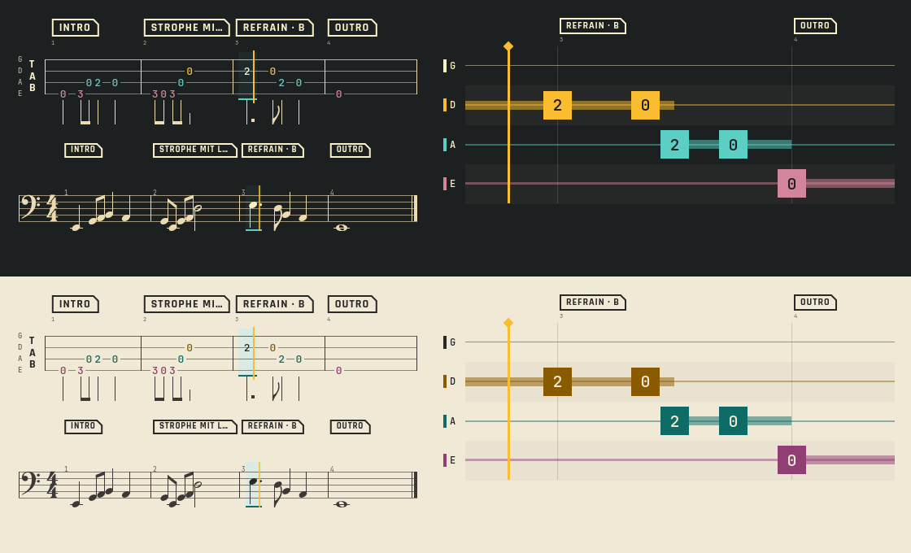
Rehearsal marks in tab, notation and lane, in Kante and LeinenProbenzeichen in Tabulatur, Noten und Lane, in Kante und Leinen -
1.49
For players on the keyboard alone, at 200 % and with deuteranopia: Return presses buttons, the focus stays in view, a wrong note has a frame.
Für alle, die nur mit der Tastatur arbeiten, bei 200 % und mit Deuteranopie: Return drückt Knöpfe, der Fokus bleibt sichtbar, ein falscher Ton hat einen Rahmen.
NewNeu
KanteFocusFollowscrolls a long page so the focused control is in view.KanteSteps.skipped: a skipped step shows a dash, not the done check. Bar charts and the timing histogram name their value axis.
KanteFocusFollowscrollt eine lange Seite, sodass das fokussierte Element sichtbar ist.KanteSteps.skipped: Ein übersprungener Schritt zeigt einen Strich statt des Hakens. Balkendiagramme und das Timing-Histogramm beschriften ihre Werteachse.
FixedBehoben
- Return and Enter press a focused
KanteButtonorKanteToolButton; before, only Space did. - A wrong note in the tab and key lanes is framed; with deuteranopia its red looked like the D string's ochre.
- Return und Enter drücken einen fokussierten
KanteButtonoderKanteToolButton; vorher ging nur die Leertaste. - Ein falscher Ton in Tab- und Tasten-Lane hat einen Rahmen; mit Deuteranopie sah sein Rot wie das Ocker der D-Saite aus.
All changes in 1.49 →Alle Änderungen in 1.49 →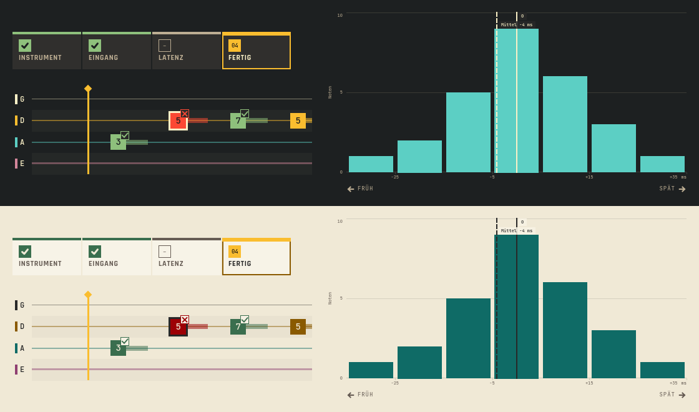
Skipped step, framed wrong note, axis title, in Kante and LeinenÜbersprungener Schritt, gerahmter falscher Ton, Achsentitel, in Kante und Leinen -
1.48
A workbench: a list to scan beside a desk for one entry, receipts to pick, and a bar that shows what is left of an amount.
Eine Werkbank: eine Liste zum Überfliegen neben einer Arbeitsfläche für einen Eintrag, Belege zum Auswählen und ein Balken, der zeigt, was von einem Betrag übrig ist.
NewNeu
.benchwith.bench-listand.bench-desk. Each entry shows in two lines and a bar how complete it is; the current one is cyan. On a phone the desk goes under the list..pick: a receipt card with a preview, a radio or check box and a score..field-originsays where a value came from,dl.kvlists what was read..sumbar: parts of an amount in their colours, the rest hatched, the rest in red or green.
.benchmit.bench-listund.bench-desk. Jeder Eintrag zeigt in zwei Zeilen und einem Balken, wie vollständig er ist; der aktuelle ist cyan. Am Telefon steht die Arbeitsfläche unter der Liste..pick: eine Belegkarte mit Vorschau, Radio oder Häkchen und Wertung..field-originsagt, woher ein Wert kommt,dl.kvlistet, was gelesen wurde..sumbar: die Teile eines Betrags in ihren Farben, der Rest schraffiert, der Rest in Rot oder Grün.
All changes in 1.48 →Alle Änderungen in 1.48 →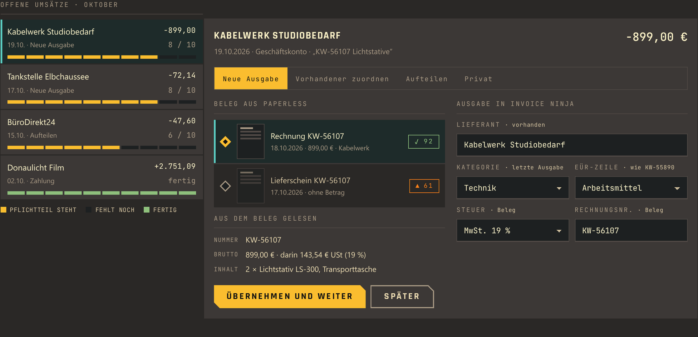
List and deskListe und Arbeitsfläche 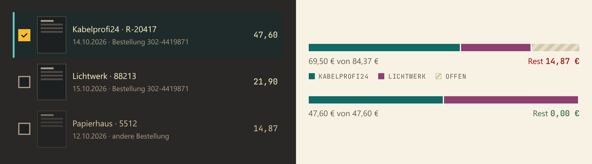
Pick and sum bar, in Kante and LeinenBelegwahl und Summenbalken, in Kante und Leinen -
1.47
Waiting gets one look: a bar on top, the clicked link runs a light, old content dims.
Warten sieht überall gleich aus: ein Balken oben, ein Lauflicht um den geklickten Link, alter Inhalt wird blass.
NewNeu
.page-load,.is-pendingandaria-busyregions. They show only after 150 ms, so fast answers stay calm..loading(squares plus a word),.btn-status(a reserved line under buttons) and.step-timefor live steps.
.page-load,.is-pendingund Bereiche mitaria-busy. Sie erscheinen erst nach 150 ms, schnelle Antworten bleiben ruhig..loading(Quadrate und ein Wort),.btn-status(eine freigehaltene Zeile unter Knöpfen) und.step-timefür laufende Schritte.
All changes in 1.47 →Alle Änderungen in 1.47 →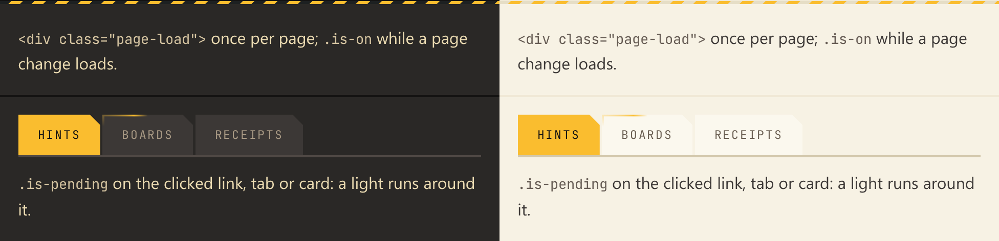
Page load bar and pending link, in Kante and LeinenLadebalken und wartender Link, in Kante und Leinen 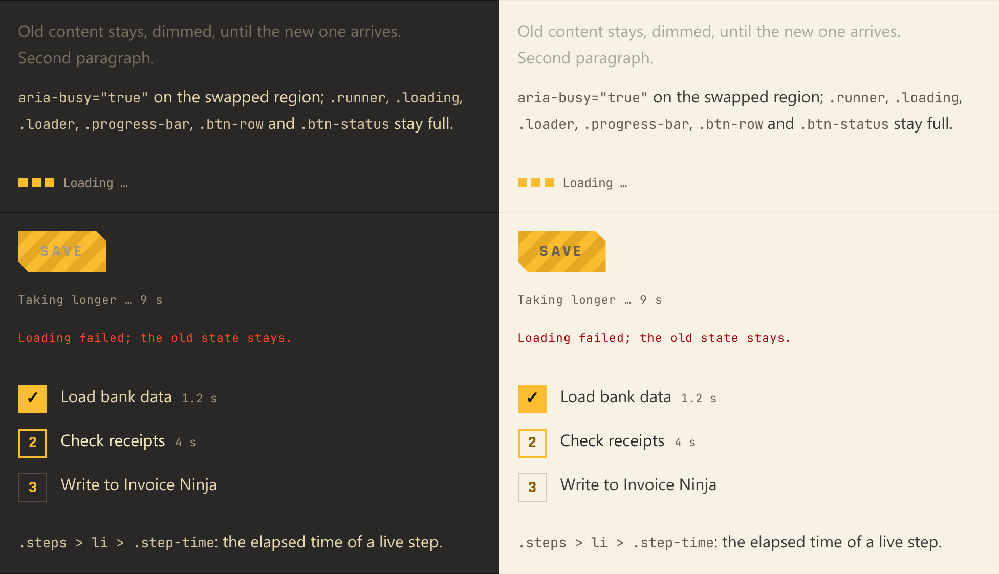
Busy region, loading word, button status and step timeWartender Bereich, Ladewort, Knopfstatus und Schrittzeit -
1.46
Status cards can be a choice: a period picked by its state.
Statuskarten können eine Auswahl sein: ein Zeitraum, gewählt nach seinem Stand.
NewNeu
a.statuswitharia-current: the chosen card is tinted with a yellow bar at the bottom; its state keeps the bar on top..status-rowlines the cards up and wraps them on a phone.
a.statusmitaria-current: Die gewählte Karte ist getönt und hat unten einen gelben Balken; ihr Stand behält den Balken oben..status-rowreiht die Karten auf und bricht sie am Telefon um.
FixedBehoben
- A busy outlined button showed its stripes in one small tile that jumped back; they now fill the whole button and march through it.
- Ein beschäftigter umrandeter Knopf zeigte seine Streifen in einer kleinen Kachel, die zurücksprang; jetzt füllen sie den ganzen Knopf und wandern durch.
All changes in 1.46 →Alle Änderungen in 1.46 →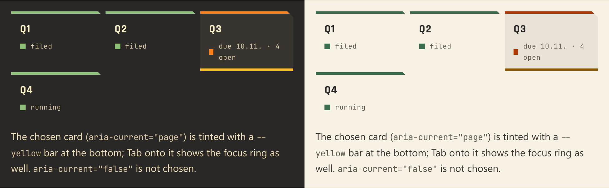
Status cards as a choice, in Kante and LeinenStatuskarten als Auswahl, in Kante und Leinen 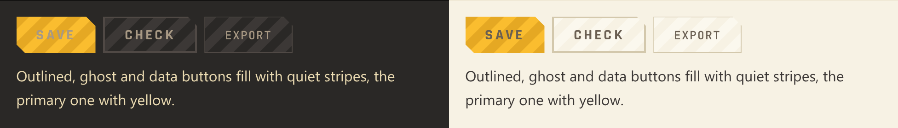
Busy buttons: stripes across the whole buttonBeschäftigte Knöpfe: Streifen über den ganzen Knopf -
1.45
The audio meter no longer hides its size factor.
Der Pegelmesser verdeckt seinen Größenfaktor nicht mehr.
All changes in 1.45 →Alle Änderungen in 1.45 →BreakingInkompatibel
KanteAudioMeter: the labels' switch isshowScale;scaleis the item's size factor again, as on everyItem. Old code: a literalscale: trueorscale: falseno longer loads (number expected), nor does the page that holds it; a binding loads and goes wrong silently, at 0 the meter shrinks to nothing. Search forscale:on everyKanteAudioMeter.
KanteAudioMeter: Die Beschriftung schaltet jetztshowScale;scaleist wieder der Größenfaktor, wie bei jedemItem. Alter Code: Ein Literalscale: trueoderscale: falselädt nicht mehr (Zahl erwartet), und mit ihm die ganze Seite; eine Bindung lädt und läuft still falsch, bei 0 schrumpft der Messer auf nichts. Nachscale:an jedemKanteAudioMetersuchen.
-
1.44
The timing histogram shows the target band.
Das Timing-Histogramm zeigt das Ziel-Band.
NewNeu
KanteTimingHistogram: a target band (for example laid-back, +10 to +30 ms) as a shaded range with dashed edges and a label, so you see where your notes sit against the aim.KanteBarChart:rangesshade any span behind the bars.
KanteTimingHistogram: ein Ziel-Band (etwa laid-back, +10 bis +30 ms) als getönter Bereich mit gestrichelten Rändern und Beschriftung; so siehst du, wo deine Töne gegenüber dem Ziel liegen.KanteBarChart:rangestönen beliebige Bereiche hinter den Balken.
All changes in 1.44 →Alle Änderungen in 1.44 →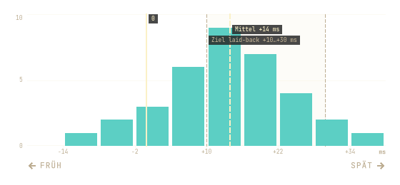
Laid-back aim: the band from +10 to +30 ms (demo data)Ziel laid-back: das Band von +10 bis +30 ms (Demodaten) -
1.43
Parts for a mixing desk: drag a pane's size, menus with sections and shortcuts, a popover, swatches, option tiles.
Bausteine für ein Mischpult: Größen ziehen, Menüs mit Abschnitten und Kürzeln, ein Popover, Farbfelder, Auswahlkacheln.
NewNeu
KanteSplitHandle: the grip between two panes; drag, arrows or a double click to the default.KanteMenuItemandKanteMenuSection: menu items with icon, value and shortcut asKanteKeycap; headings that group them.KantePopover: a card at a button for settings that apply at once.KanteSwatchPicker,KanteTableHeader,KanteOptionTile;KanteToastgets an action (Undo);KanteDialognames its accept button (acceptText).
KanteSplitHandle: der Griff zwischen zwei Bereichen; ziehen, Pfeiltasten oder Doppelklick zurück zum Standard.KanteMenuItemundKanteMenuSection: Menüeinträge mit Icon, Wert und Kürzel alsKanteKeycap; Überschriften, die sie gruppieren.KantePopover: eine Karte am Knopf für Einstellungen, die sofort gelten.KanteSwatchPicker,KanteTableHeader,KanteOptionTile;KanteToastbekommt eine Aktion (Rückgängig);KanteDialogbenennt seinen Bestätigen-Knopf (acceptText).
FixedBehoben
KanteSheetSkin,KanteMessageSkin: after leaving Kante a sheet or inline message kept a hidden platform background, as menus did before 1.42.KanteToaststays while the pointer is over it, then gets its full time again.
KanteSheetSkin,KanteMessageSkin: Nach dem Verlassen von Kante blieb der Plattform-Hintergrund eines Sheets oder einer Meldung verborgen, wie bei Menüs vor 1.42.KanteToastbleibt stehen, solange der Zeiger darauf liegt, und bekommt danach wieder seine volle Zeit.
All changes in 1.43 →Alle Änderungen in 1.43 →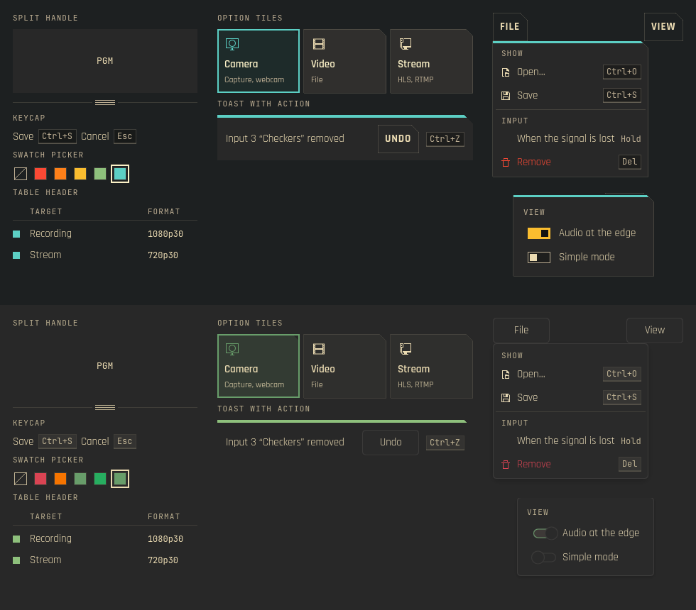
The new parts in Kante (top) and Kante LightDie neuen Teile in Kante (oben) und Kante Light -
1.42
Menus stay opaque after leaving Kante.
Menüs bleiben deckend, nachdem Kante verlassen wurde.
FixedBehoben
KantePopupSkin: switching from Kante to Kante Light or System left menus see-through, their items straight over what lay below. The skin now keeps the platform background and draws its card behind the content; a popup without a background gets the card too.
KantePopupSkin: Nach dem Wechsel von Kante zu Kante Light oder System waren Menüs durchsichtig, die Einträge lagen direkt über dem Inhalt darunter. Der Skin behält jetzt den Plattform-Hintergrund und zeichnet seine Karte hinter den Inhalt; auch ein Popup ohne Hintergrund bekommt sie.
BreakingInkompatibel
KantePopupSkin: the propertykanteBackgroundis gone, and in Kantepopup.backgroundis the hidden platform background; the card iskanteCard.
KantePopupSkin: Die PropertykanteBackgroundentfällt, und in Kante istpopup.backgroundder ausgeblendete Plattform-Hintergrund; die Karte heißtkanteCard.
All changes in 1.42 →Alle Änderungen in 1.42 →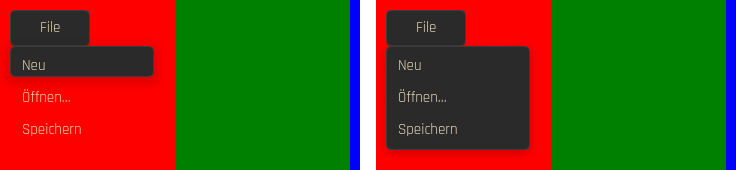
The same menu after leaving Kante, before and afterDasselbe Menü nach dem Verlassen von Kante, vorher und nachher -
1.40
Staves without notes stay quiet.
Notenzeilen ohne Noten bleiben still.
All changes in 1.40 →Alle Änderungen in 1.40 →FixedBehoben
KanteTabStaff,KanteBassStaff: emptying the notes during playback logged aTypeError; the description for screen readers now waits for the current note.
KanteTabStaff,KanteBassStaff: Wurden die Noten während der Wiedergabe geleert, meldete die Konsole einenTypeError; die Beschreibung für Screenreader wartet jetzt auf den aktuellen Ton.
-
1.39
Wizard steps fit narrow windows.
Schritte eines Assistenten passen auch in schmale Fenster.
ImprovedVerbessert
KanteSteps: when the labels no longer fit, only the current step keeps its label; the others show their number or check. Screen readers still hear every step by name.
KanteSteps: passen die Beschriftungen nicht mehr, behält nur der aktuelle Schritt seine; die anderen zeigen Nummer oder Haken. Screenreader hören weiter jeden Schritt mit Namen.
NoteHinweis
KanteStepsis now anItemwith the steps in aRow(it was theRowitself);model,currentandspacingstay. Its own width is always the width with every label, also when it is created asynchronously (aLoader), so it turns compact only under a width set by a layout.
KanteStepsist jetzt einItemmit den Schritten in einerRow(bisher dieRowselbst);model,currentundspacingbleiben. Seine eigene Breite ist immer die mit allen Beschriftungen, auch wenn es asynchron entsteht (einLoader); kompakt wird es nur unter einer Breite, die ein Layout setzt.
All changes in 1.39 →Alle Änderungen in 1.39 →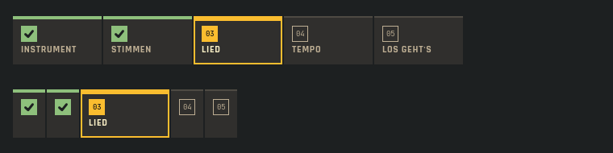
The same steps wide and narrow (demo data)Dieselben Schritte breit und schmal (Demodaten) -
1.38
One main button in the transport: play.
Ein Hauptknopf in der Wiedergabe: Abspielen.
ImprovedVerbessert
KanteTransportBar: loop, metronome and count-in show on or off by the square before the word alone, no longer as filled buttons next to play. Screen readers hear them as check boxes.
KanteTransportBar: Schleife, Metronom und Einzähler zeigen an oder aus nur noch am Kästchen vor dem Wort, nicht mehr als gefüllte Knöpfe neben „Abspielen“. Screenreader lesen sie als Kontrollkästchen.
All changes in 1.38 →Alle Änderungen in 1.38 →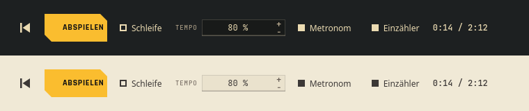
Metronome and count-in on, loop off: the lamp tells the state (Kante and Leinen)Metronom und Einzähler an, Schleife aus: das Kästchen zeigt den Zustand (Kante und Leinen) -
1.37
Ghost notes in tab as printed: the fret in parentheses, nothing more.
Ghost Notes in der Tabulatur wie gedruckt: der Bund in Klammern, sonst nichts.
ImprovedVerbessert
KanteTabLaneandKanteTabStaffno longer draw "( )" above a ghost note's parenthesized fret; in sixteenths the two ran together. A technique result frames the fret instead.
KanteTabLaneundKanteTabStaffzeichnen über dem geklammerten Bund einer Ghost Note kein „( )“ mehr; bei Sechzehnteln lief beides ineinander. Ein Technik-Ergebnis rahmt stattdessen den Bund.
All changes in 1.37 →Alle Änderungen in 1.37 →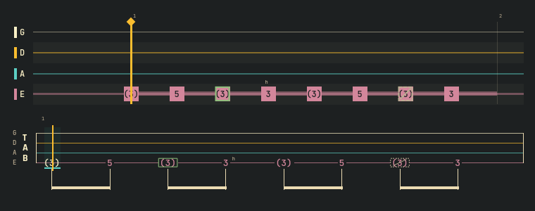
Ghost notes in lane and tab: the fret in parentheses; a result frames it (demo data)Ghost Notes in Lane und Tab: der Bund in Klammern; ein Ergebnis rahmt ihn (Demodaten) -
1.36
Key figures read as one: screen readers hear "Practised: 7 min".
Kennzahlen am Stück: Screenreader hören „Geübt: 7 min“.
All changes in 1.36 →Alle Änderungen in 1.36 →FixedBehoben
KanteKpihas one accessible name of label and value, the change as description. Before, figure and label were read as two loose texts.
KanteKpihat einen Namen aus Beschriftung und Wert, die Änderung als Beschreibung. Bisher wurden Zahl und Beschriftung als zwei lose Texte vorgelesen.
-
1.35
Loops in tab and notes: tablature and bass staff show the loop range the tab lane already showed. From lmix: a page bar, dark picture areas and vertical sliders.
Schleifen in Tab und Noten: Tabulatur und Bassnoten zeigen den Loop-Bereich, den bisher nur die Tab-Lane zeigte. Aus lmix: eine Seitenleiste, dunkle Bildflächen und senkrechte Schieberegler.
NewNeu
KanteTabStaffandKanteBassStaff:loopStartandloopEndas on the tab lane, a tint with bracket edges, so a looped passage is visible in every view, not only by colour.- A loop across a line break continues on the next line; brackets only where it really starts and ends.
KantePageBar: the bar at the foot of an app window that switches between a few large pages. The current page is raised with a marker line; a dot on a tab says something runs there, Warning and Error as a diamond, so the kind is not colour alone. Keyboard and screen readers included.KanteStyle.stageColorandstageTextColor: the ground of monitors and video previews, dark in every kind and in Leinen too, as the web.stage.KanteSliderSkindraws vertical sliders (faders): the track runs along the height, filled from the bottom.
KanteTabStaffundKanteBassStaff:loopStartundloopEndwie in der Tab-Lane, eine Tönung mit Klammerkanten, damit eine Schleife in jeder Ansicht zu sehen ist, nicht nur an der Farbe.- Eine Schleife über einen Zeilenumbruch geht in der nächsten Zeile weiter; Klammern nur, wo sie wirklich beginnt und endet.
KantePageBar: die Leiste am Fuß eines App-Fensters, die zwischen wenigen großen Seiten umschaltet. Die aktuelle Seite ist hervorgehoben und hat eine Markierungslinie; ein Punkt auf einem Reiter zeigt, dass dort etwas läuft, Warnung und Fehler als Raute, damit die Art nicht nur an der Farbe hängt. Mit Tastatur und Screenreader.KanteStyle.stageColorundstageTextColor: der Grund von Monitoren und Videovorschauen, dunkel in jeder Art und auch in Leinen, wie.stageim Web.KanteSliderSkinzeichnet senkrechte Schieberegler (Fader): Die Spur läuft entlang der Höhe und füllt sich von unten.
NoteHinweis
- Additions only: existing calls keep working; without a loop nothing changes, horizontal sliders look as before.
- Nur Ergänzungen: bestehende Aufrufe funktionieren weiter; ohne Schleife ändert sich nichts, waagerechte Schieberegler sehen aus wie bisher.
All changes in 1.35 →Alle Änderungen in 1.35 →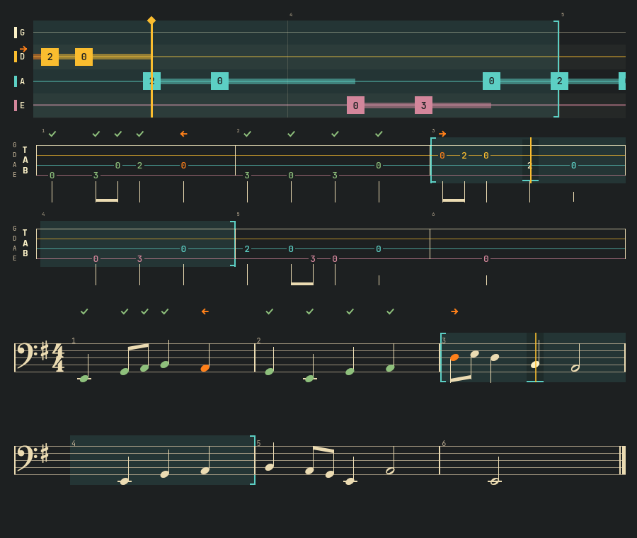
Bars 3 and 4 looped in lane, tab and staff (demo data)Takte 3 und 4 als Schleife in Lane, Tab und Noten (Demodaten) 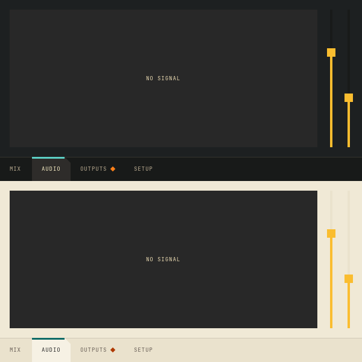
Page bar, picture area and vertical sliders, in Kante and LeinenSeitenleiste, Bildfläche und senkrechte Schieberegler, in Kante und Leinen -
1.34.1
A date field with a two-digit year keeps the year it shows.
Ein Datumsfeld mit zweistelliger Jahreszahl behält das Jahr, das es zeigt.
FixedBehoben
KanteDateFieldwith a short format such asdd.MM.yyorM/d/yy: the field shows "26" and read it back as 1926 when it was entered and left. Two-digit years now lie in the century around today, at most 20 years ahead. In Plasmai a running entry started 100 years back, and Kimai refused a stopped one as too long.
KanteDateFieldmit einem Kurzformat wiedd.MM.yyoderM/d/yy: Das Feld zeigt „26“ und las das beim Betreten und Verlassen als 1926 zurück. Zweistellige Jahre liegen jetzt im Jahrhundert um heute, höchstens 20 Jahre voraus. In Plasmai begann ein laufender Eintrag 100 Jahre früher, und Kimai lehnte einen beendeten als zu lang ab.
NoteHinweis
- Fields with a four-digit year (the default
dd.MM.yyyy) were not affected.
- Felder mit vierstelligem Jahr (der Standard
dd.MM.yyyy) waren nicht betroffen.
All changes in 1.34.1 →Alle Änderungen in 1.34.1 →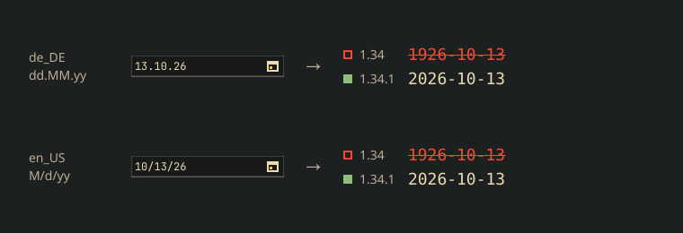
What the field reads back from its own text, German and US formatWas das Feld aus seinem eigenen Text zurückliest, deutsches und US-Format -
1.34
Japanese in pieces gets a Japanese face, not a Chinese one.
Japanisch in Stücken bekommt eine japanische Schrift statt einer chinesischen.
NewNeu
KanteStyle.japaneseFamilyandjapaneseFont(): the first installed Japanese face of a preference list.
KanteStyle.japaneseFamilyundjapaneseFont(): die erste installierte japanische Schrift einer Vorzugsliste.
All changes in 1.34 →Alle Änderungen in 1.34 →FixedBehoben
- Ruby text, pitch curve and correction diff draw Japanese in a Japanese face. Under a German or English locale single kanji fell back to a Chinese face: other glyph forms, a lower baseline, a centred 。.
- Ruby-Text, Pitch-Kurve und Korrektur-Diff zeigen Japanisch in einer japanischen Schrift. Unter deutscher oder englischer Locale fielen einzelne Kanji auf eine chinesische Schrift zurück: andere Zeichenformen, tiefere Grundlinie, mittiges 。.
-
1.33
Words to look up in Japanese text: a click on a word, for Kaiwa's dictionary.
Wörter zum Nachschlagen in japanischem Text: ein Klick auf ein Wort, für Kaiwas Wörterbuch.
NewNeu
KanteRubyText: segments form words; withinteractivea word underlines on hover and opens with a click, or with Tab, the arrow keys and Enter. Screen readers hear the focused word.
KanteRubyText: Segmente bilden Wörter; mitinteractiveunterstreicht sich ein Wort beim Darüberfahren und öffnet sich per Klick oder mit Tab, Pfeiltasten und Eingabe. Screenreader lesen das gewählte Wort vor.
All changes in 1.33 →Alle Änderungen in 1.33 →NoteHinweis
- Additions only: existing calls keep working.
- Nur Ergänzungen: bestehende Aufrufe funktionieren weiter.
-
1.32
Dead notes for Kontra: a note muted without pitch gets its own sign.
Dead Notes für Kontra: ein gedämpfter Ton ohne Tonhöhe bekommt ein eigenes Zeichen.
NewNeu
KanteTechniqueMark: the dead note "x", with played, another technique or not heard as for every technique.- Tab lane and tablature write a dead note's fret as x, as in printed tab.
KanteTechniqueMark: die Dead Note „x“, mit gespielt, andere Technik oder nicht gehört wie bei jeder Technik.- Tab-Lane und Tabulatur schreiben den Bund einer Dead Note als x, wie in gedruckter Tabulatur.
All changes in 1.32 →Alle Änderungen in 1.32 →NoteHinweis
- Additions only: existing calls keep working.
- Nur Ergänzungen: bestehende Aufrufe funktionieren weiter.
-
1.31
Technique marks for Kontra: tab, lane and staff show how a note is to be played, and whether it was.
Technik-Zeichen für Kontra: Tab, Lane und Noten zeigen, wie eine Note zu spielen ist und ob sie so gespielt wurde.
NewNeu
KanteTechniqueMark: the tab signs for slide, hammer-on, pull-off, slap, pop and ghost note; played, another technique or not heard show by frame and strike, not by colour alone.- Tab lane, tablature and bass staff take a technique and its result per note; a ghost note's fret reads in parentheses.
KanteTechniqueMark: die Tab-Zeichen für Slide, Hammer-on, Pull-off, Slap, Pop und Ghost Note; gespielt, andere Technik oder nicht gehört zeigen Rahmen und Durchstreichung, nicht nur die Farbe.- Tab-Lane, Tabulatur und Bassnoten nehmen je Note eine Technik und ihr Ergebnis; der Bund einer Ghost Note steht in Klammern.
NoteHinweis
- Additions only: existing calls keep working.
- Nur Ergänzungen: bestehende Aufrufe funktionieren weiter.
All changes in 1.31 →Alle Änderungen in 1.31 →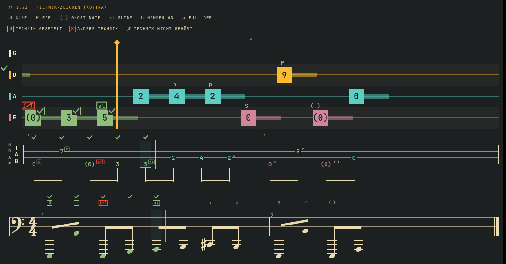
Technique signs in lane, tab and staff (demo data)Technik-Zeichen in Lane, Tab und Noten (Demodaten) -
1.30
A keyboard for Kontra's bass over MIDI: players who play bass lines on keys see the notes fall onto the keys they play.
Eine Klaviatur für Kontras Bass über MIDI: wer Basslinien auf Tasten spielt, sieht die Noten auf die Tasten fallen, die zu spielen sind.
NewNeu
KanteKeyboard: piano keys for a MIDI range with markers by shape (current, next, root, scale) and the note state signs; key names from the app; optionally usable by keyboard and click.KanteKeyLane: falling notes over the keys, with the tab lane's notes, timing and state signs, so an app feeds both the same data.KanteKeyLayout: the key geometry both share, with piano proportions.
KanteKeyboard: Klaviertasten für einen MIDI-Bereich mit Markierungen nach Form (aktuell, nächste, Grundton, Tonleiter) und den Zeichen der Notenzustände; Tastennamen von der App; auf Wunsch mit Tastatur und Klick bedienbar.KanteKeyLane: fallende Noten über den Tasten, mit Noten, Zeitachse und Zustandszeichen der Tab-Lane, so dass eine App beiden dieselben Daten gibt.KanteKeyLayout: die gemeinsame Tastengeometrie, in Klavierproportionen.
NoteHinweis
- Additions only: existing calls keep working.
- Nur Ergänzungen: bestehende Aufrufe funktionieren weiter.
All changes in 1.30 →Alle Änderungen in 1.30 →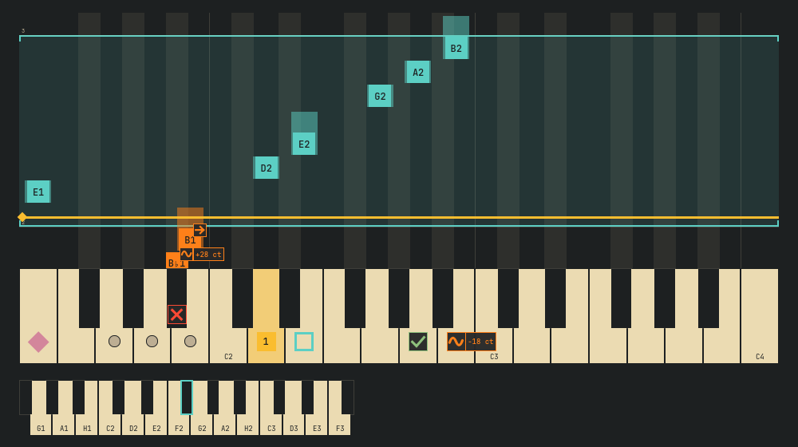
Key lane over the keyboard (demo data)Notenspur über der Klaviatur (Demodaten) -
1.29
Colour labels in apps and an audio meter for mixers, for lmix's Qt Console.
Farblabels in Apps und ein Audio-Meter für Mischpulte, für die Qt-Konsole von lmix.
NewNeu
- Seven colour labels, the same on the web and in apps: red, orange, yellow, green, cyan, blue, purple. A label keeps its colour in every theme; its name stands beside it.
KanteAudioMeter: a level in dBFS with three zones, peak hold and a scale, also vertical.
- Sieben Farblabels, im Web und in Apps gleich: Rot, Orange, Gelb, Grün, Cyan, Blau, Lila. Ein Label behält seine Farbe in jedem Theme; sein Name steht daneben.
KanteAudioMeter: ein Pegel in dBFS mit drei Zonen, Spitzenwert-Halten und Skala, auch senkrecht.
All changes in 1.29 →Alle Änderungen in 1.29 →NoteHinweis
- Web:
data-labelalso takesorangeandcyan.KanteLevelMeterstays the input check with zones in words.
- Web:
data-labelkennt auchorangeundcyan.KanteLevelMeterbleibt die Eingangsprüfung mit Zonen in Worten.
-
1.28
More wishes from Kontra, the bass trainer: choices that are not available yet, help next to a term, a Kante number field and alternate endings in the tablature.
Weitere Wünsche aus Kontra, dem Basstrainer: Auswahlen, die es noch nicht gibt, Hilfe neben einem Begriff, ein Zahlenfeld in Kante und Wiederholungsklammern in der Tabulatur.
NewNeu
KanteInfoTip: a “?” next to a term that explains it on hover, focus or click; its name for screen readers is plain text the app sets.KanteSpinBox: a spin box in Kante, with the same API as the Qt one (units viatextFromValue, typing, keys).KanteTabStaff: volta brackets over the bars of an ending (“1.”, “2.”), fromendingsin the bar data; also across a line break.
KanteInfoTip: ein „?“ neben einem Begriff, das ihn bei Zeigen, Fokus oder Klick erklärt; seinen Namen für Screenreader setzt die App als einfachen Text.KanteSpinBox: ein Zahlenfeld in Kante, mit derselben API wie das von Qt (Einheiten übertextFromValue, Eintippen, Tasten).KanteTabStaff: Wiederholungsklammern (Volta) über den Takten eines Schlusses („1.“, „2.“), ausendingsin den Taktdaten; auch über einen Zeilenumbruch.
ImprovedVerbessert
KanteSegmentedand.seg: single segments can be disabled. They are faded and struck through, take no click, arrow keys skip them, and their tooltip can say why.KanteFieldSkin: on a spin box, + or − fades when the value is at its limit.KanteTabStaff,KanteBassStaff,KanteTabLane: bars show the number the app sends (bars[i].number), so repeats played out read 5, 6, 5, 6 as in the score.- String colours: the palette moves into
KanteStylewith the presets “kante”, “mono” and “bright”; lane, tablature and fretboard share it (stringColors). Strings keep their names, so colour is never the only sign.
KanteSegmentedund.seg: einzelne Segmente lassen sich abschalten. Sie sind blass und durchgestrichen, nehmen keinen Klick an, die Pfeiltasten überspringen sie, und ihr Tooltip kann sagen, warum.KanteFieldSkin: an einem Zahlenfeld wird + oder − blass, wenn der Wert an seiner Grenze ist.KanteTabStaff,KanteBassStaff,KanteTabLane: Takte zeigen die Nummer, die die App schickt (bars[i].number), ausgespielte Wiederholungen lesen sich so wie in den Noten: 5, 6, 5, 6.- Saitenfarben: die Palette zieht nach
KanteStyle, mit den Vorgaben „kante“, „mono“ (einfarbig) und „bright“ (kräftig); Spur, Tabulatur und Griffbrett teilen sie (stringColors). Saiten behalten ihre Namen, die Farbe ist nie das einzige Zeichen.
NoteHinweis
- Additions only: existing calls keep working. A tablature without
endingskeeps its layout. Tablature and fretboard now draw their strings in the string palette instead of muted;stringPalette: "mono"comes closest to the old look.
- Nur Ergänzungen: bestehende Aufrufe funktionieren weiter. Eine Tabulatur ohne
endingsbehält ihr Layout. Tabulatur und Griffbrett zeichnen ihre Saiten jetzt in der Saitenpalette statt gedämpft;stringPalette: "mono"kommt dem alten Bild am nächsten.
All changes in 1.28 →Alle Änderungen in 1.28 →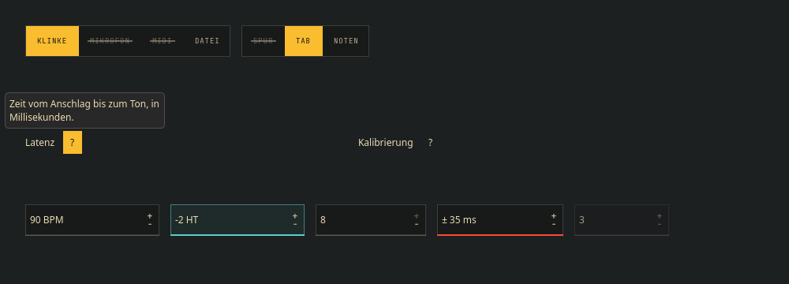
Disabled segments, info tip and spin boxes (demo data)Abgeschaltete Segmente, Info-Tipp und Zahlenfelder (Demodaten) 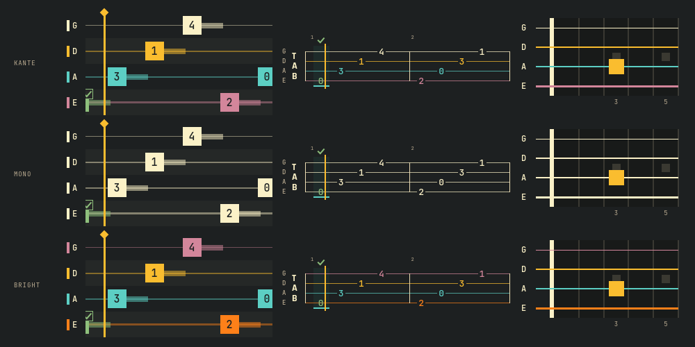
String palettes kante, mono, bright (demo data)Saitenpaletten kante, mono, bright (Demodaten) 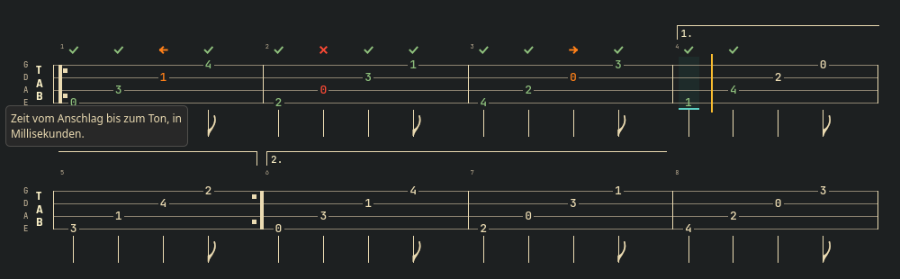
Volta brackets in the tablature (demo data)Wiederholungsklammern in der Tabulatur (Demodaten) -
1.27
Wishes from a QA round of Kontra, the bass trainer: Kante controls instead of light platform ones, a primary action that stands out in Kante Light, steps that differ by shape, and more for the bass staff.
Wünsche aus einer QA-Runde von Kontra, dem Basstrainer: Kante-Bedienelemente statt heller Plattform-Elemente, eine Hauptaktion, die in Kante Light heraussticht, Schritte, die sich in der Form unterscheiden, und mehr für das Bass-Notensystem.
NewNeu
KanteSwitchandKanteComboBox: a switch and a combo box in Kante, the combo box's open list included.- Note state
offpitch: the right note, its pitch off by more than the app's limit. A wave as its sign, the deviation beside it (“+32 ct”). KanteBassStaff: chord symbols per bar or at a time, and a key per bar (naturals only when the key returns to C).
KanteSwitchundKanteComboBox: Schalter und Auswahlfeld in Kante, die offene Liste des Auswahlfelds eingeschlossen.- Notenzustand
offpitch(„unsauber“): der richtige Ton, aber mehr als die Grenze der App verstimmt. Eine Welle als Zeichen, die Abweichung daneben („+32 ct“). KanteBassStaff: Akkordsymbole pro Takt oder an einer Zeit und eine Tonart pro Takt, Auflösungszeichen nur bei der Rückkehr nach C.
ImprovedVerbessert
KanteSteps: done shows a check, the current step a filled number and an outline, upcoming steps a hollow number, so colour is never the only difference (WCAG 1.4.1).
KanteSteps: erledigt zeigt einen Haken, der aktuelle Schritt eine gefüllte Nummer und einen Rahmen, kommende eine hohle Nummer; die Farbe ist nie der einzige Unterschied (WCAG 1.4.1).
FixedBehoben
- Kante Light: the primary button looked like any other. It is now filled in the platform highlight, darkened until its label reads at 4.5:1.
KanteFieldSkin: the combo box arrow is drawn, so it shows without an icon theme.
- Kante Light: der Hauptknopf sah aus wie jeder andere. Er ist jetzt in der Hervorhebungsfarbe der Plattform gefüllt, abgedunkelt, bis seine Beschriftung 4,5:1 erreicht.
KanteFieldSkin: der Pfeil des Auswahlfelds wird gezeichnet und erscheint so auch ohne Symbolthema.
NoteHinweis
- Additions only: existing calls keep working. A plain combo box with
KanteFieldSkinkeeps the style's list; useKanteComboBoxfor a Kante list.
- Nur Ergänzungen: bestehende Aufrufe funktionieren weiter. Ein einfaches Auswahlfeld mit
KanteFieldSkinbehält die Liste des Stils; für eine Kante-ListeKanteComboBoxnehmen.
All changes in 1.27 →Alle Änderungen in 1.27 →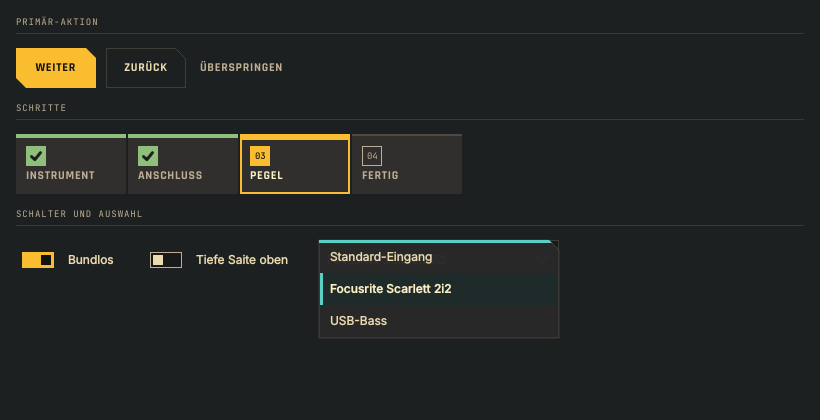
Primary action, steps, switch and combo box (demo data)Hauptaktion, Schritte, Schalter und Auswahlfeld (Demodaten) 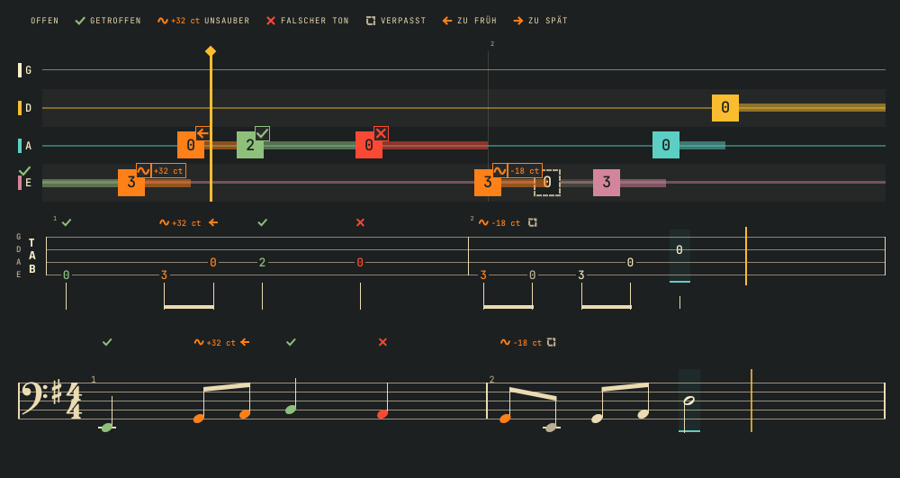
The offpitch state with cents (demo data)Der Zustand „unsauber“ mit Cent (Demodaten) Chord symbols and key changes (demo data)Akkordsymbole und Tonartwechsel (Demodaten)
Earlier releases are listed in the README, one section per version.
Frühere Versionen stehen im README, ein Abschnitt pro Version.